第1讲 · 函数极限与连续
据《张宇考研数学基础30讲·高等数学分册（2026版）》整理 · 覆盖原书 P48–P122
本讲导读
这是高等数学 18 讲的第一讲，全书的地基。章首表格写得直白：本讲考题就是计算函数极限，选择、填空、解答题都出；张宇在章首点名的重难点是洛必达法则和泰勒公式。全讲路线是先函数（概念、特性、图像），再极限（定义、性质、无穷小），然后计算（六种方法打七种未定式），最后连续与间断——计算是绝对核心，前面的概念都是为它服务的。
（站注·真题大数据）极限计算属于考研数学第一梯队考点：近 15 年几乎每年至少 2 题，选择/填空加大题常年稳定占分，是整个高数部分「60%+ 分值的六大板块之一」之一（极限计算、导数应用、积分计算、微分方程）。这一讲学不透，后面 17 讲全都跟着晃。
书中"超实数"一套讲法是本讲特色：它把"等价替换到底哪一步合法"（乘除因子可换、加减项不可换）讲透了，第一遍读不懂可以先跳，做完题回头看会通。学完记得回到章首知识结构图自测：能自己默出整棵树才算过关。
知识框架
- 一、函数的概念与特性
- 函数
- 定义：每一个 \(x\) 对应唯一的 \(y\)（单值函数）
- 铅直画线法：任一铅直直线与图像至多一个交点
- 求表达式的两条路：换元配凑（例1.1）、方程消元（例1.2）
- 反函数
- 定义：值域中每个 \(y\) 对应唯一的 \(x\)
- 严格单调 \(\Rightarrow\) 有反函数（充分不必要）
- 水平画线法；\(x=f^{-1}(y)\) 与 \(y=f(x)\) 同坐标系图像重合
- 复合函数
- 条件：内层值域 \(g(D)\subset D_1\)
- 三个重要函数：\(\ln(x+\sqrt{x^2+1})\)、\(\frac{\mathrm{e}^x-\mathrm{e}^{-x}}{2}\)、\(\frac{\mathrm{e}^x+\mathrm{e}^{-x}}{2}\) 及三条重要结论
- 隐函数：\(F(x,y)=0\) 确定唯一的 \(y(x)\)；显化与否两例
- 四种特性
- 有界性：先指明区间 \(I\subset D\)，再找 \(M\)
- 单调性：差积判别法（充要）；\(|f(x)|\) 与 \(f(|x|)\) 的性态
- 奇偶性：前提定义域关于原点对称；拆奇偶之和；复合口诀；求导一次奇偶互换
- 周期性：\(f(ax+b)\) 以 \(\frac{T}{|a|}\) 为周期；可导周期函数的导数仍周期；\(f[g(x)]\)（\(g\) 周期）周期
- 二、函数的图像
- 六类基本初等函数：常数、幂、指数、对数、三角、反三角（两条主线：特殊点+无限环节）
- 初等函数定义；幂指函数 \(u(x)^{v(x)}=\mathrm{e}^{v(x)\ln u(x)}\)
- 分段函数三兄弟：\(|x|\)、\(\operatorname{sgn}x\)、取整函数 \([x]\)
- 三、函数极限的概念与性质
- 邻域 / 去心邻域 / 左右邻域
- 极限定义：自变量 6 种趋向 \(\times\) 函数 4 种趋向 \(=24\) 个定义；单侧与双向
- 超实数：核与光环、趋核速度——等价替换合法性的来源
- 三性质：唯一性（左右极限相等充要）、局部有界性、局部保号性（脱帽/戴帽）
- 无穷小：定义、三条性质、无穷多个无穷小之和的反例
- 无穷小的比阶：高阶、低阶、同阶、等价、\(k\) 阶
- 常用等价无穷小表 + 广义化（狗记号）+ 差函数等价系列
- 无穷大：定义、与无穷小的倒数关系、无界 \(\ne\) 无穷大
- 四、计算（考题集中地、全讲重头戏）
- 解题流程：化简先行 \(\to\) 判型 \(\to\) 选工具
- 方法：四则运算法则（含两条反用）、洛必达法则、泰勒公式（两条展开原则）、高阶无穷小运算、两个重要极限、夹逼准则
- 七种未定式：\(\frac{0}{0}\)、\(\frac{\infty}{\infty}\)、\(0\cdot\infty\)、\(\infty-\infty\)、\(\infty^{0}\)、\(0^{0}\)、\(1^{\infty}\)
- 题型四种：直接计算、反求参数、已知某一极限求另一极限、无穷小的比阶
- 五、函数的连续与间断
- 连续点定义（三值合一）、闭区间端点的单侧连续
- 连续性运算法则、初等函数在定义区间内连续、连续保号
- 间断点：可去、跳跃（第一类）；无穷、振荡（第二类）
- 间断点研究的框架：找嫌疑点 \(\to\) 算左右极限 \(\to\) 对号入座
核心概念与定理
定义1.1 函数
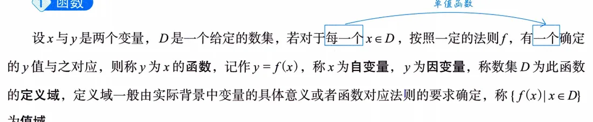
设 \(x\) 与 \(y\) 是两个变量，\(D\) 是给定数集，若对每一个 \(x\in D\)，按某一法则 \(f\) 都有确定的 \(y\) 值与之对应，则称 \(y\) 是 \(x\) 的函数。定义里"每一个 \(x\) 对应一个（确定的）\(y\)"这半句是命门：它就是单值函数，任一条铅直直线与图像至多一个交点（铅直画线法）。多对一是单值，一对多不是——考研只玩单值函数。定义域由实际背景或对应法则的要求确定；对应法则与所用字母无关，\(f(x)=x^2\) 则 \(f\!\left(\frac{1}{x}\right)=\frac{1}{x^2}\)。
常见用法：给抽象关系式求 \(f(x)\)，两条路——换元配凑（见例1.1）、把 \(x\) 换成 \(\frac{1}{x}\) 等再造一个方程联立消元（见例1.2）。
定义1.2 反函数
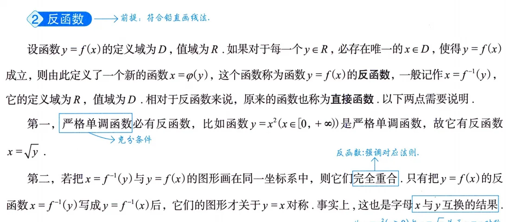
设 \(y=f(x)\) 定义域 \(D\)、值域 \(R\)，若对每一个 \(y\in R\) 都有唯一的 \(x\in D\) 使 \(f(x)=y\)，则得到新函数 \(x=f^{-1}(y)\)，定义域为 \(R\)、值域为 \(D\)。三件事要分清：
- 严格单调只是"有反函数"的充分条件，不单调也可能自反（书上例子 \(f(x)=\begin{cases}x,&x\ge 0,\\ \frac{1}{x},&x<0\end{cases}\) 的反函数是它自己）。判断反函数存在用水平画线法：任一水平直线与图像至多一个交点。口诀：铅直直线定单、多，水平直线定反、直。
- \(x=f^{-1}(y)\) 与 \(y=f(x)\) 画在同一坐标系里图像重合；把字母互换写成 \(y=f^{-1}(x)\) 之后才关于 \(y=x\) 对称。
- 常用关系 \(f[f^{-1}(x)]=x\)、\(f^{-1}[f(x)]=x\)。
定义1.3 复合函数与三个重要函数
复合的前提是内层值域落进外层定义域：\(y=f(u)\)（\(u\in D_1\)）与 \(u=g(x)\)（\(x\in D\)），仅当 \(g(D)\subset D_1\) 时复合 \(f[g(x)]\) 有意义。书里点名"以后会经常用到"的三个函数和三条结论一起打包：
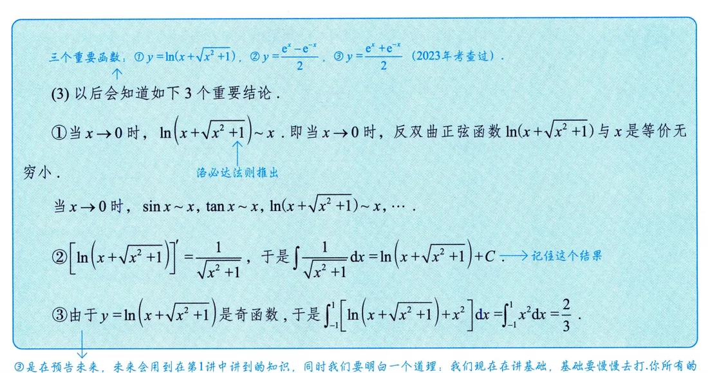
- 三个函数：\(y=\ln(x+\sqrt{x^2+1})\)（反双曲正弦）、\(y=\frac{\mathrm{e}^x-\mathrm{e}^{-x}}{2}\)（双曲正弦）、\(y=\frac{\mathrm{e}^x+\mathrm{e}^{-x}}{2}\)（双曲余弦，书上注明 2023 年考过）。
- 结论①：\(x\to0\) 时 \(\ln(x+\sqrt{x^2+1})\sim x\)；结论②：\(x\to0\) 时 \(\frac{\mathrm{e}^x-\mathrm{e}^{-x}}{2}\sim x\)；结论③：①③为奇函数、②为偶函数（内层换 \(-x\) 直接验证，如 \(\ln(\sqrt{x^2+1}-x)\) 变形后变号）。
第③条先记着：\(\ln(x+\sqrt{x^2+1})\) 是奇函数，于是 \(\int_{-1}^{1}\left[\ln(x+\sqrt{x^2+1})+x^2\right]\mathrm{d}x=\int_{-1}^{1}x^2\,\mathrm{d}x=\frac{2}{3}\)。这三兄弟后面学积分时反复出场。
定义1.4 隐函数
方程 \(F(x,y)=0\) 若能在某区间上确定唯一的 \(y=y(x)\)，就称它确定了一个隐函数。\(x+y^3-1=0\) 可显化为 \(y=\sqrt[3]{1-x}\)；\(\sin(xy)=\ln\dfrac{x+\mathrm{e}}{y}+1\) 这种就不易显化。（站注）书上的说法是：隐函数问题先提到这里，后面有隐函数存在定理及其推得的公式法，到多元微分再讲。
定义1.5 函数的四种特性
- 有界性：设 \(f(x)\) 定义域为 \(D\)，对数集 \(I\subset D\)，若存在正数 \(M\) 使任一 \(x\in I\) 都有 \(|f(x)|\le M\)，称 \(f(x)\) 在 \(I\) 上有界。谈有界先指区间：\(y=\frac{1}{x}\) 在 \((2,+\infty)\) 内有界，在 \((0,2)\) 内无界。证有界的套路是找 \(M\)（见例1.6）。
- 单调性：定义法本身是充要条件。顺手记判别式：对任意 \(x_1,x_2\in D\)，\(x_1\ne x_2\)，\(f\) 单调增 \(\Leftrightarrow(x_1-x_2)[f(x_1)-f(x_2)]>0\)（把 \(>0\) 换成 \(<0\)、\(\ge0\)、\(\le0\) 就得单调减、不减、不增）。配套图形结论：\(|f(x)|\) 的单调性与 \(f(x)\) 的正负相关，\(f(|x|)\) 是偶函数、在 \((-\infty,+\infty)\) 上谈不上单调（见例1.7）；对称三公式：\(f(x)\) 与 \(f(-x)\) 关于 \(y\) 轴对称、\(f(x)\) 与 \(-f(x)\) 关于 \(x\) 轴对称、\(f(x)\) 与 \(-f(-x)\) 关于原点对称。
- 奇偶性：前提是定义域关于原点对称，不对称直接免谈（这是判断题最爱挖的坑）。四个现成结论：任一函数都能拆成 \(f(x)=\underbrace{\frac{1}{2}[f(x)+f(-x)]}_{\text{偶}}+\underbrace{\frac{1}{2}[f(x)-f(-x)]}_{\text{奇}}\)；复合口诀"内偶则偶，内奇同外"（偶[奇] \(\Rightarrow\) 偶如 \(\cos(\sin x)\)、\(|\sin x|\)，奇[奇] \(\Rightarrow\) 奇如 \(\mathrm{e}^{x}-\mathrm{e}^{-x}\) 的内层结构，奇[偶] \(\Rightarrow\) 偶如 \(\sin x^2\)）；\(f\) 奇 \(\Rightarrow f'\) 偶 \(\Rightarrow f''\) 奇，求导一次奇偶互换；判断抽象结构时泰勒展开看偶次项/奇次项最快。
- 周期性：\(f(x)\) 以 \(T\) 为周期，则 \(f(ax+b)\) 以 \(\frac{T}{|a|}\) 为周期；可导的周期函数 \(f'(x)\) 仍以 \(T\) 为周期；\(g\) 周期则 \(f[g(x)]\) 也周期（如 \(\mathrm{e}^{\sin x}\)、\(\cos^2 x=\frac{1+\cos 2x}{2}\) 周期 \(\pi\)）。
定义2.1 基本初等函数与初等函数
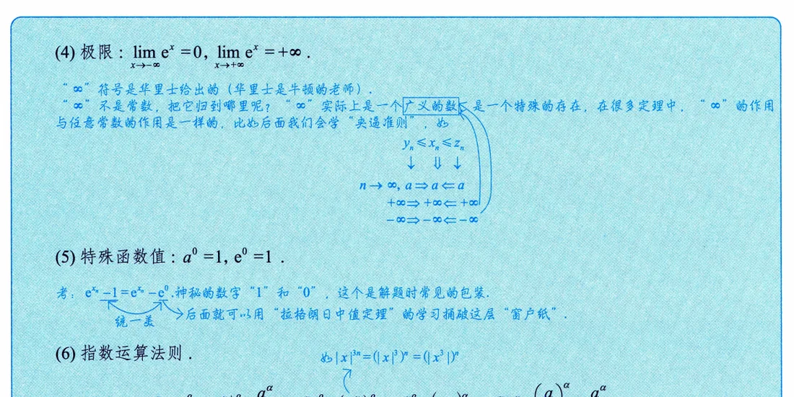
六类基本初等函数（常数、幂、指数、对数、三角、反三角）的图像和特殊值要张口就来。书里给的记忆主线是两条：特殊点（与坐标轴交点、最值点、极值点、对称中心）与无限环节（\(x\to\infty\) 时向两端的趋势、\(x\to x_0\) 时向某铅直直线逼近的趋势）。只挑书里重点强调的：
- 指数函数：\(\lim\limits_{x\to-\infty}\mathrm{e}^x=0\)，\(\lim\limits_{x\to+\infty}\mathrm{e}^x=+\infty\)，两侧行为不同，是后面单侧极限题的源头。
- \(y=\arctan x\) 被书称为"三基"之一、全部高数里应用最广的函数之一：定义域 \(\mathbb{R}\)、值域 \(\left(-\frac{\pi}{2},\frac{\pi}{2}\right)\)、严格增、奇函数。反三角主值区间：\(\arcsin x\in\left[-\frac{\pi}{2},\frac{\pi}{2}\right]\)、\(\arccos x\in[0,\pi]\)；恒等式 \(\arcsin x+\arccos x=\frac{\pi}{2}\)。
- 初等函数：常数与基本初等函数经有限次四则运算和有限次复合、并能用一个式子表示的函数。
定义2.2 幂指函数
\(u(x)^{v(x)}=\mathrm{e}^{v(x)\ln u(x)}\)（\(u(x)>0\)）也是初等函数，如 \(x^x=\mathrm{e}^{x\ln x}\)。这是处理一切幂指型极限的总开关：先抬到 \(\mathrm{e}\) 上，幂指未定式就化成了指数上的普通极限。
定义2.3 分段函数三兄弟
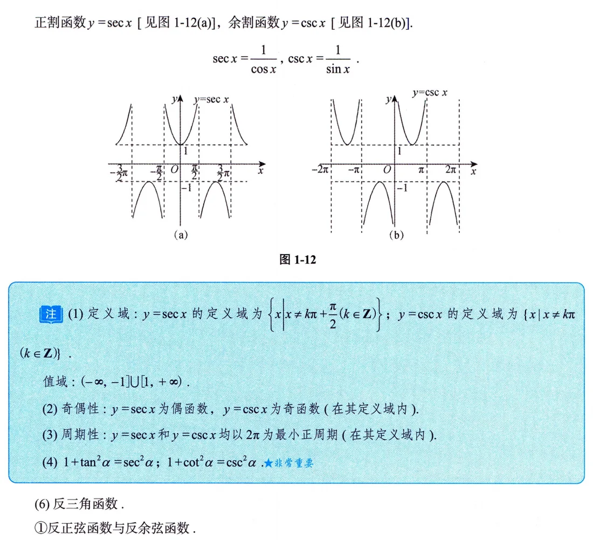
分段函数是"一个函数用几个式子表示"，一般不是初等函数（但 \(|x|=\sqrt{x^2}\) 是个特例，反而是初等函数）。三大件：
- \(y=|x|\)：定义域 \(\mathbb{R}\)、值域 \([0,+\infty)\)，\((-\infty,0)\) 内单调减、\((0,+\infty)\) 内单调增，偶函数。
- \(y=\operatorname{sgn}x=\begin{cases}1,&x>0,\\ 0,&x=0,\\ -1,&x<0,\end{cases}\)：恒等式 \(x=|x|\operatorname{sgn}x\)。
- \(y=[x]\) 取整函数：\([x]\) 表示不超过 \(x\) 的最大整数，\([3.2]=3\)、\([3]=3\)、\([-3.2]=-4\)。
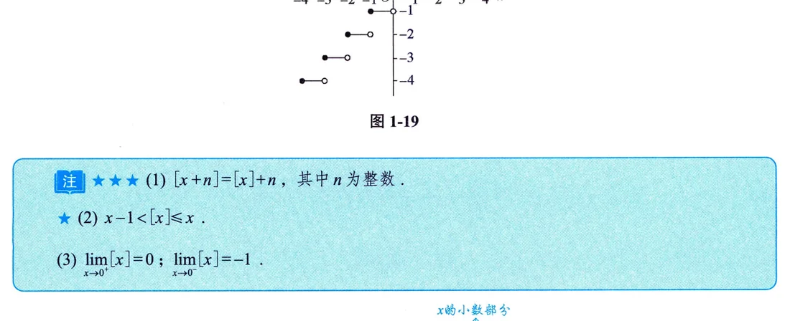
三条性质：\(x-1<[x]\le x\)；对整数 \(k\) 有 \([x+k]=[x]+k\)；\(0\le x-[x]<1\)（小数部分）。配图记：\([x]\) 的图像是阶梯，在 \(0\) 处右极限 \(0\)、左极限 \(-1\)，它是"单侧极限不相等"的头号明星函数。
定义3.1 邻域
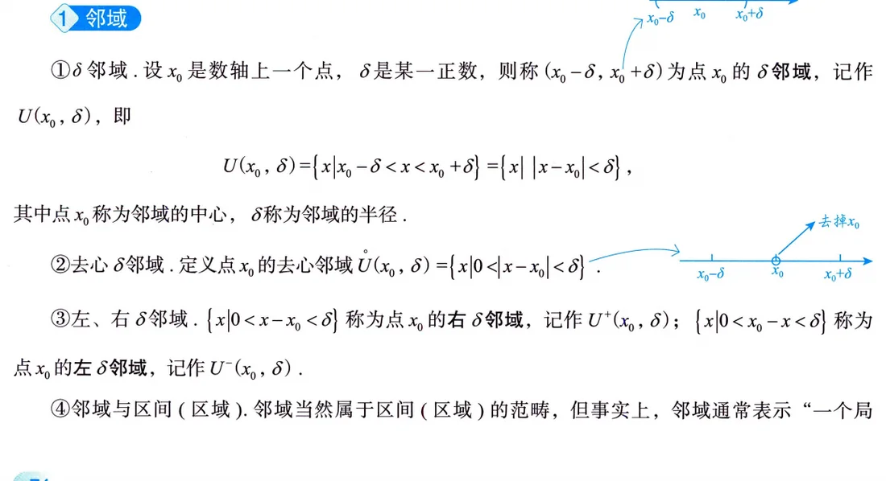
\(U(x_0,\delta)=\{x\mid |x-x_0|<\delta\}\) 是 \(x_0\) 的 \(\delta\) 邻域；挖掉中心得去心邻域 \(U^\circ(x_0,\delta)=\{x\mid 0<|x-x_0|<\delta\}\)；再加左邻域 \((x_0-\delta,x_0)\)、右邻域 \((x_0,x_0+\delta)\)。极限只看"去心"邻域：\(x_0\) 这一点本身取不取到、函数在不在那里有定义，都不影响极限。
定义3.2 函数极限（24 个定义）
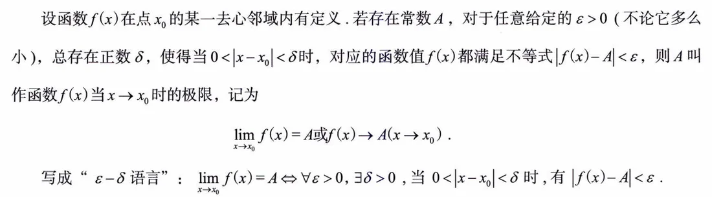
\(\lim\limits_{x\to x_0}f(x)=A\)：对任意给定的 \(\varepsilon>0\)，存在 \(\delta>0\)，当 \(0<|x-x_0|<\delta\) 时，\(|f(x)-A|<\varepsilon\)。自变量 6 种趋向（\(x\to x_0\)、\(x\to x_0^+\)、\(x\to x_0^-\)、\(x\to\infty\)、\(x\to+\infty\)、\(x\to-\infty\)）配函数 4 种趋向（\(A\)、\(\infty\)、\(+\infty\)、\(-\infty\)）共 24 个定义，结构完全平行，挑 \(x\to x_0\) 与 \(x\to\infty\) 两组各手写一遍即可。要点：
- 定义里两个关键词不能丢：去心邻域（\(0<|x-x_0|<\delta\)）与任意给定的 \(\varepsilon>0\)（\(\varepsilon\) 是任意的、\(\delta\) 是随后找的，一般 \(\varepsilon\) 越小 \(\delta\) 越小）。
- \(x\to\infty\) 是双向的：意味着 \(x\to+\infty\) 且 \(x\to-\infty\) 同时成立。
- 四个经典的"极限不存在"：\(\lim\limits_{x\to\infty}\mathrm{e}^x\)、\(\lim\limits_{x\to0}\dfrac{\sin x}{|x|}\)、\(\lim\limits_{x\to\infty}\arctan x\)、\(\lim\limits_{x\to0}[x]\)，各自左右（两侧）行为不同。
定义3.3 超实数与"核"
书的特色讲法：把实数系扩成超实数系 \({}^*\mathbb{R}\)（包含无穷小与无穷大），一个超实数 \(a+\delta\)（\(\delta\) 为无穷小）的标准部分是 \(a\)，称 \(a\) 为它的核；\(a\) 的"光环"（halo）是全体与 \(a\) 相差无穷小的超实数。两条应用：极限值就是超实数的核（\(\lim f(x)=A\) 即 \(f(x)\) 的核为 \(A\)）；两个非零无穷小等价 \(\Leftrightarrow\) 趋核速度相同——这正是"等价替换为什么只能整体换乘除因子、不能换加减项"的合法性来源（乘除中因子整体趋核，速度可比；加减中各项各自趋核，换了就改变了差的结构）。第一遍可跳，做完例1.28、例1.30 一类题回头看会通。
定理3.1 极限的三条性质
- 唯一性：极限存在必唯一。充要条件：\(\lim\limits_{x\to x_0}f(x)=A\iff \lim\limits_{x\to x_0^-}f(x)=\lim\limits_{x\to x_0^+}f(x)=A\)。分段函数的分段点、带绝对值的式子、\(\mathrm{e}^{\frac{1}{x-1}}\) 这类结构必须分左右算。
- 局部有界性：若 \(\lim\limits_{x\to x_0}f(x)=A\)，则存在 \(M>0,\delta>0\)，当 \(0<|x-x_0|<\delta\) 时 \(|f(x)|\le M\)。它是局部性质，且极限存在只是局部有界的充分条件（\(\sin x\) 处处有界但 \(\lim\limits_{x\to\infty}\sin x\) 不存在）。
- 局部保号性（三个里最重要）：
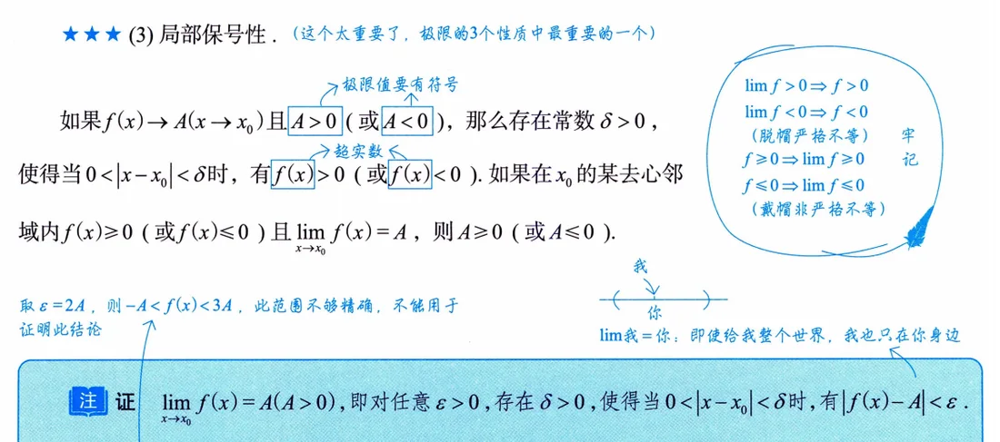
"脱帽严格不等，戴帽非严格不等"：由 \(\lim f=A>0\) 能推出去心邻域内 \(f(x)>0\)（脱帽，严格推严格）；反过来由去心邻域内 \(f(x)\ge0\)、\(\lim f=A\) 存在，只能推 \(A\ge0\)（戴帽，等号丢不得——\(f(x)=x^2>0\) 但 \(\lim\limits_{x\to0}x^2=0\)）。配套推论：\(\lim f=A\ne0\) \(\Rightarrow\) 去心邻域内 \(|f(x)|>\frac{|A|}{2}\)。常见用法：保号性选择题（例1.17、例1.18 型）、以及"由 \(\lim\frac{f}{g}=A\ne0\) 反推 \(f\) 与 \(g\) 同为无穷小/无穷大"。
定义3.4 无穷小
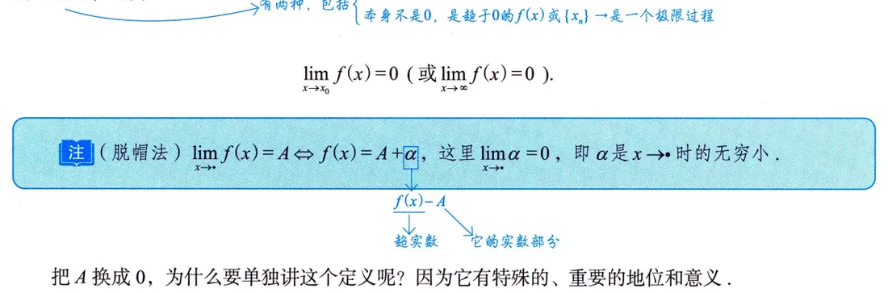
若 \(\lim\limits_{x\to x_0}f(x)=0\)，称 \(f(x)\) 是 \(x\to x_0\) 时的无穷小。无穷小是极限为零的变量（过程），不是一个很小的数；常数里唯一的无穷小是 \(0\)；且与极限过程有关（\(\sin x\) 是 \(x\to0\) 时的无穷小，\(x\to\frac{\pi}{2}\) 时不是）。性质三条：有限个无穷小的和是无穷小；有界函数乘无穷小是无穷小（\(\lim\limits_{x\to0}x\sin\frac{1}{x}=0\)、\(\lim\limits_{x\to+\infty}\frac{\sin x}{x}=0\)）；有限个无穷小的积是无穷小。"有限个"三个字不能丢——\(\lim\limits_{n\to\infty}\left(\frac{1}{n+1}+\frac{1}{n+2}+\cdots+\frac{1}{n+n}\right)=\ln 2\) 就是无穷多个无穷小之和不为零的例子（第 8 讲定积分定义专门算）。
定义3.5 无穷小的比阶
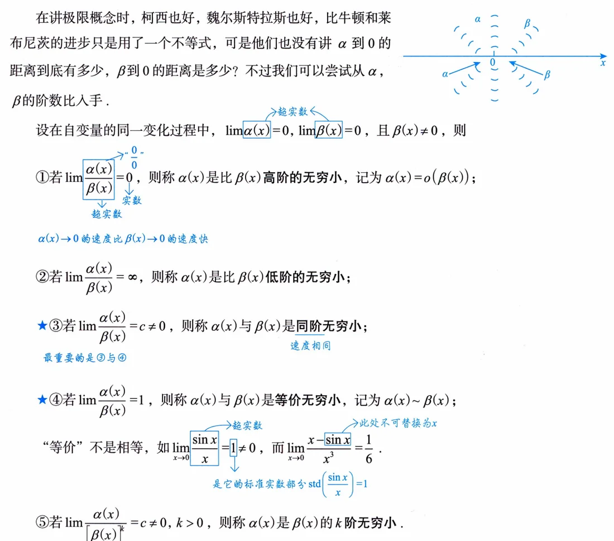
同一过程中的 \(\alpha\)、\(\beta\)（\(\alpha\ne0\)），看 \(\lim\frac{\beta}{\alpha}\)：为 \(0\) 是高阶（\(\beta=o(\alpha)\)）、为 \(\infty\) 是低阶、为 \(C\ne0\) 是同阶、为 \(1\) 是等价、\(\lim\frac{\beta}{\alpha^k}=C\ne0\) 称 \(\beta\) 是 \(\alpha\) 的 \(k\) 阶无穷小。主角是同阶与等价。另外比阶不是随便比的：\(x\sin\frac{1}{x}\) 与 \(x^2\) 在 \(x\to0\) 时比不出高低，因为 \(\lim\limits_{x\to0}\frac{1}{x}\sin\frac{1}{x}\) 不存在（无界变量）。
定义3.6 常用等价无穷小与"狗"
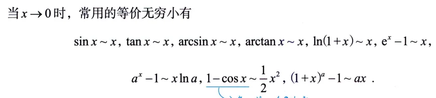
\(x\to0\) 时：\(\sin x\sim x\)、\(\tan x\sim x\)、\(\arcsin x\sim x\)、\(\arctan x\sim x\)、\(\ln(1+x)\sim x\)、\(\mathrm{e}^x-1\sim x\)、\(1-\cos x\sim\frac{x^2}{2}\)、\((1+x)^\alpha-1\sim\alpha x\)；另加推广 \(a^x-1\sim x\ln a\)、\(\sqrt[n]{1+x}-1\sim\frac{x}{n}\)。这张表要背到条件反射，而且全部可以"广义化"：把 \(x\) 换成任何趋于 \(0\) 的量，张宇管它叫"狗"——\(\lim\limits_{\text{狗}\to0}\frac{\sin\text{狗}}{\text{狗}}=1\)、\(\ln(1+\text{狗})\sim\text{狗}\)、\(\mathrm{e}^{\text{狗}}-1\sim\text{狗}\)。差函数的等价（由泰勒公式"上下同阶"推论，见例1.22）：\(x-\sin x\sim\frac{x^3}{6}\)，\(\arcsin x-x\sim\frac{x^3}{6}\)，\(\tan x-x\sim\frac{x^3}{3}\)，\(x-\arctan x\sim\frac{x^3}{3}\)，\(x-\ln(1+x)\sim\frac{x^2}{2}\)，\(\tan x-\sin x=\tan x(1-\cos x)\sim\frac{x^3}{2}\)；还常用 \(\ln x=\ln(1+x-1)\sim x-1\ (x\to1)\)。
定义3.7 无穷大
\(x\to x_0\)（或 \(x\to\infty\)）时 \(|f(x)|\) 无限增大（\(\lim|f(x)|=+\infty\)），称 \(f(x)\) 为无穷大。与无穷小互为倒数：同一过程中 \(f\) 为无穷大 \(\Rightarrow\frac{1}{f}\) 为无穷小；\(f\) 为无穷小且 \(f\ne0\Rightarrow\frac{1}{f}\) 为无穷大。注意无穷大必无界，但无界不一定是无穷大（\(\frac{1}{x}\sin\frac{1}{x}\) 在 \(x\to0\) 时无界但不是无穷大，印P82）。
定理4.1 极限四则运算法则
各极限存在时，和、差、积、商（分母极限不为 \(0\)）的极限等于极限的运算结果。两条"反着用"的结论（例1.20，定参数题直接用）：
- 若 \(\lim\frac{f(x)}{g(x)}=A\) 且 \(\lim g(x)=0\)，则 \(\lim f(x)=0\)；
- 若 \(\lim\frac{f(x)}{g(x)}=A\ne0\) 且 \(\lim f(x)=0\)，则 \(\lim g(x)=0\)。
直觉：分母极限为零而商还有极限，分子必须"陪着"为零；商极限非零而分子为零，分母也必须为零。已知"分母为零"反推分子、已知"分子为零"反推分母，是反求参数题的标准起手。
定理4.2 洛必达法则
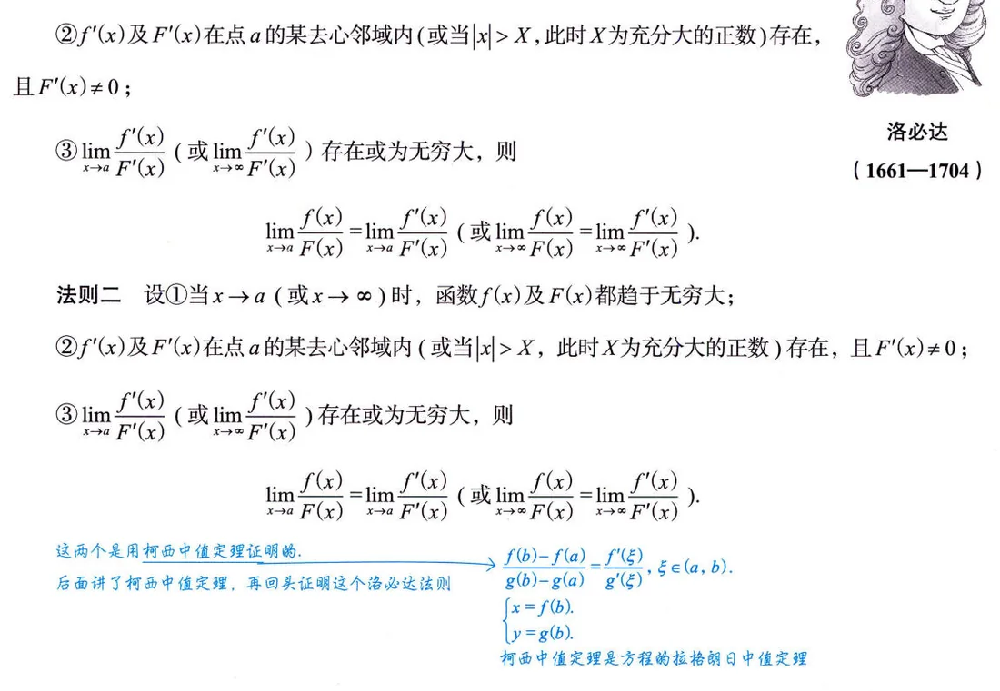
法则一（\(\frac{0}{0}\)）与法则二（\(\frac{\infty}{\infty}\)）三个条件缺一不可：①是 \(\frac{0}{0}\) 或 \(\frac{\infty}{\infty}\) 型；②在去心邻域内 \(g'(x)\ne0\)；③\(\lim\frac{f'(x)}{g'(x)}\) 存在或为无穷大。结论可连续使用（每次用前重新验型）。
两个易错点（印P95）：
- 单向箭头："右存在（或为 \(\infty\)），则左存在（或为 \(\infty\)）"；但 \(\lim\frac{f}{g}\) 存在推不出 \(\lim\frac{f'}{g'}\) 存在——反例 \(\lim\limits_{x\to0}\frac{x^2\sin\frac{1}{x}}{x}=\lim\limits_{x\to0}x\sin\frac{1}{x}=0\) 存在，求导后 \(\lim\limits_{x\to0}\left(2x\sin\frac{1}{x}-\cos\frac{1}{x}\right)\) 不存在。求导后极限不存在时，只能说明洛必达失效，不能断定原极限不存在。
- 数列极限不能直接用洛必达（要先转成函数极限，海涅归结原则，第 2 讲）。
- 不是 \(\frac{0}{0}\)、\(\frac{\infty}{\infty}\) 型硬用是大忌：先化简、提出非零极限因子、恒等变形，再上洛必达。
定理4.3 泰勒公式（佩亚诺余项）与两条展开原则
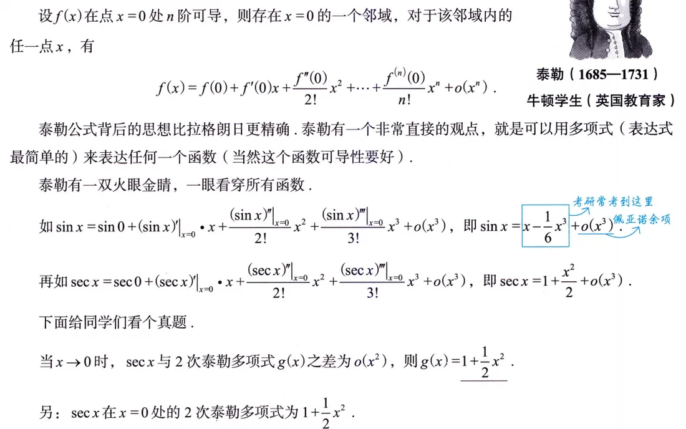
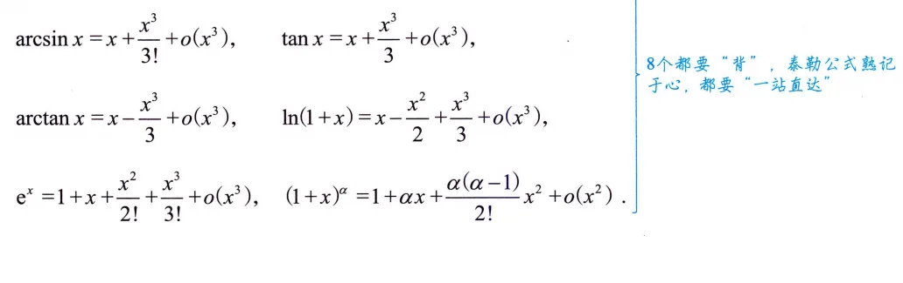
8 个常用展开式（\(\sin x\)、\(\cos x\)、\(\tan x\)、\(\arcsin x\)、\(\arctan x\)、\(\ln(1+x)\)、\(\mathrm{e}^x\)、\((1+x)^\alpha\)，见截图）要背到"一站直达"，中途不要停。应用时守两条展开原则（印P98–100）：
- \(A/B\) 型——上下同阶：分母是 \(x^k\)，分子就展开到 \(x^k\)。如 \(\ln(1+x)=x-\frac{x^2}{2}+o(x^2)\)，立刻得 \(\lim\limits_{x\to0}\frac{x-\ln(1+x)}{x^2}=\frac{1}{2}\)，即 \(x-\ln(1+x)\sim\frac{x^2}{2}\)。
- \(A-B\) 型——幂次最低：将 \(A\)、\(B\) 分别展开到系数首次不相等的最低次幂为止（\(A+B\) 写成 \(A-(-B)\) 同理）。如 \(\cos x-\mathrm{e}^{-\frac{x^2}{2}}=\left(1-\frac{x^2}{2!}+\frac{x^4}{4!}+o(x^4)\right)-\left(1-\frac{x^2}{2}+\frac{x^4}{2!\cdot4}+o(x^4)\right)=-\frac{x^4}{12}+o(x^4)\)，故 \(\cos x-\mathrm{e}^{-\frac{x^2}{2}}\sim-\frac{x^4}{12}\)。
配套高阶无穷小的运算三条（印P99）：\(o(x^m)\pm o(x^n)=o(x^l)\)，\(l=\min\{m,n\}\)（低阶吸收高阶）；\(o(x^m)\cdot o(x^n)=o(x^{m+n})\)，\(x^m\cdot o(x^n)=o(x^{m+n})\)；\(o(kx^m)=o(x^m)=k\cdot o(x^m)\)（\(k\ne0\)，常数可以自由进出 \(o(\cdot)\)）。差函数等价系列（\(x-\sin x\sim\frac{x^3}{6}\) 等）全部可以由"上下同阶"现场推出，不必死背结论。
定理4.4 两个重要极限
\[\lim_{x\to0}\frac{\sin x}{x}=1,\qquad \lim_{x\to\infty}\left(1+\frac{1}{x}\right)^{x}=\mathrm{e},\]
都要广义化着用（把 \(x\) 换成"狗"）。配套现成公式 \(\lim\limits_{x\to\infty}\left(1+\frac{a}{x}\right)^{bx+d}=\mathrm{e}^{ab}\)、\(\lim\limits_{x\to\infty}\left(\dfrac{x+a}{x-a}\right)^{x}=\mathrm{e}^{2a}\)。"\(1^{\infty}\)"型直接用简化公式 \(\lim u^{v}=\mathrm{e}^{\lim v(u-1)}\)（要求 \(\lim u=1\)、\(\lim v=\infty\)），最后整体"抄"回 \(\mathrm{e}\)，别只算指数忘了底数。
定理4.5 夹逼准则与增长速度
若 \(h(x)\le f(x)\le g(x)\) 且 \(\lim g(x)=\lim h(x)=A\)，则 \(\lim f(x)=A\)。注意由 \(\lim[g(x)-h(x)]=0\) 推不出 \(\lim f(x)\) 存在（书上反例：\(h=x+\frac{1}{x+1}\)，\(f=x+\frac{2}{x+1}\)，\(g=x+\frac{3}{x+1}\)，\(x\to+\infty\) 时两头之差趋于零而 \(f\to+\infty\)）。增长速度链条直接背：\(x\to+\infty\) 时 \(\ln^{\alpha}x\ll x^{\beta}\ll a^{x}\)（\(a>1\)，\(\alpha,\beta>0\)）；\(n\to\infty\) 时 \(\ln^{\alpha}n\ll n^{\beta}\ll a^{n}\ll n!\ll n^{n}\)。抓大放小全靠它。
定理4.6 七种未定式
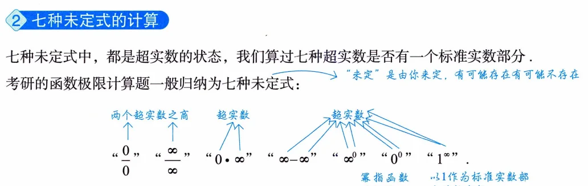
\(\frac{0}{0}\)、\(\frac{\infty}{\infty}\) 是基本型，直接洛必达或泰勒；\(0\cdot\infty\) 把简单因式下放分母变型；\(\infty-\infty\) 通分或有理化；\(\infty^{0}\)、\(0^{0}\)、\(1^{\infty}\) 一律 \(\mathrm{e}\) 抬底。解题一般步骤（印P101–102）：①化简先行——提出极限不为 \(0\) 的因式、等价无穷小替换、恒等变形（提公因式、拆项、分子分母同除最高次幂，高级的如负代换、倒代换）；②判断未定式类型；③选工具（四则、洛必达、泰勒、夹逼）。很多题不化简就硬算会算不动甚至算不出。题型四种：直接计算、反求参数、已知某一极限求另一极限、无穷小的比阶。
定义5.1 连续
\(f(x)\) 在 \(x_0\) 的某一邻域（含 \(x_0\)）内有定义，且 \(\lim\limits_{x\to x_0}f(x)=f(x_0)\)——左极限、右极限、函数值三值合一。在 \([a,b]\) 上连续指内部每点连续、左端点右连续、右端点左连续。区间端点只谈单侧连续，不谈间断。
定理5.1 连续性运算法则
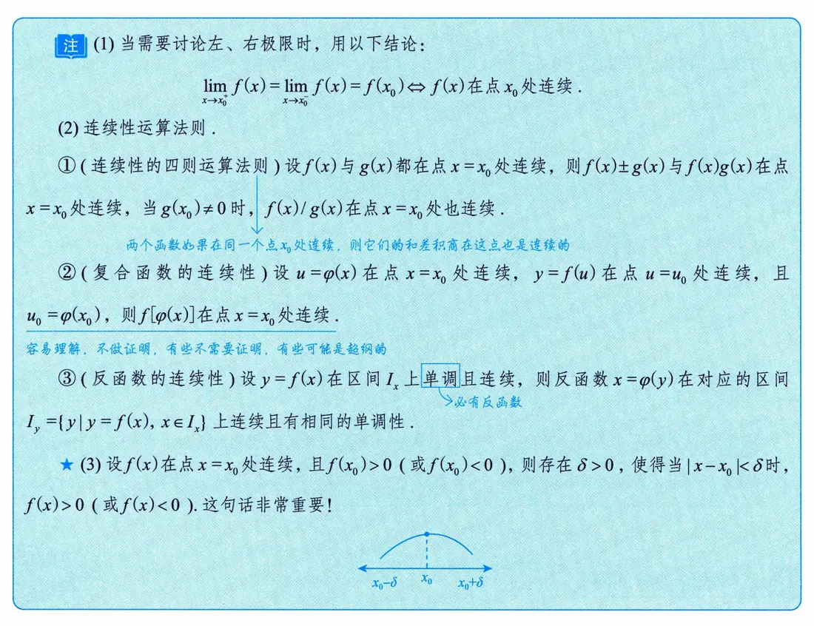
连续函数的和差积商（分母不为零）仍连续；连续函数的复合仍连续；严格单调连续函数的反函数仍连续；初等函数在其定义区间内处处连续。连续也有保号性（截图中"连续保号"）：\(f(x_0)>0\) 且 \(f\) 在 \(x_0\) 连续 \(\Rightarrow\) \(x_0\) 的某邻域内 \(f(x)>0\)。用法：初等函数求间断点只需盯无定义点与分段点；分段函数连续性定参数就靠"三值合一"列方程（例1.33）。
定义5.2 间断点及其分类
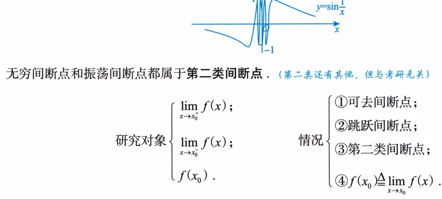
间断点只找两类嫌疑：无定义点、分段点（初等函数在定义区间内都连续，别的地方不会断）。流程：找嫌疑点 \(\to\) 算左右极限 \(\to\) 对号入座。分类：
- 可去间断点（第一类）：\(\lim\limits_{x\to x_0}f(x)=A\ne f(x_0)\)（\(f(x_0)\) 甚至可以无定义）。补上或改定义 \(f(x_0)=A\) 就连续了，所以又叫可补间断点。
- 跳跃间断点（第一类）：左右极限都存在但不相等，与 \(f(x_0)\) 的取值无关。
- 无穷间断点（第二类）：左右极限至少有一个为 \(\infty\)，如 \(x=0\) 之于 \(y=\frac{1}{x}\)。
- 振荡间断点（第二类）：极限振荡不存在，如 \(x=0\) 之于 \(y=\sin\frac{1}{x}\)。
典型例题精讲
原书第 1 讲共 38 道例题。下面 23 道题做完整精讲（题面、思路、关键步骤全部复述），其余 15 道在本节末尾速览。
例1.1 配元法求函数表达式
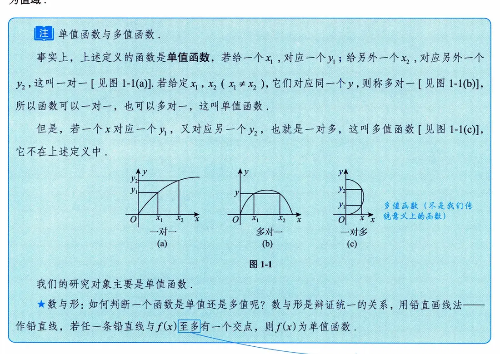
思路 已知 \(f\!\left(x+\frac{1}{x}\right)\) 的表达式求 \(f(x)\)，把整个 \(\left(x+\frac{1}{x}\right)\) 看成一个新变量，用恒等变形把右端凑成 \(\left(x+\frac{1}{x}\right)\) 的函数（配元），而不是硬解方程。 要点 原式右端分子分母同除以 \(x^2\)：\[f\!\left(x+\frac{1}{x}\right)=\frac{x+x^3}{1+x^4}=\frac{x+\frac{1}{x}}{x^2+\frac{1}{x^2}}=\frac{x+\frac{1}{x}}{\left(x+\frac{1}{x}\right)^2-2},\] 记 \(t=x+\frac{1}{x}\)，则 \(f(t)=\frac{t}{t^2-2}\)，于是 \(f(x)=\dfrac{x}{x^2-2}\)（\(x\ge2\)，因为 \(x>0\) 时 \(t=x+\frac{1}{x}\ge2\)）。 注 方法总结（原书）：换元的关键是把"复合的结构"整体看作一个字母；定义域由新变量的取值范围决定，这半句最容易丢。
例1.2 方程消元法求函数表达式
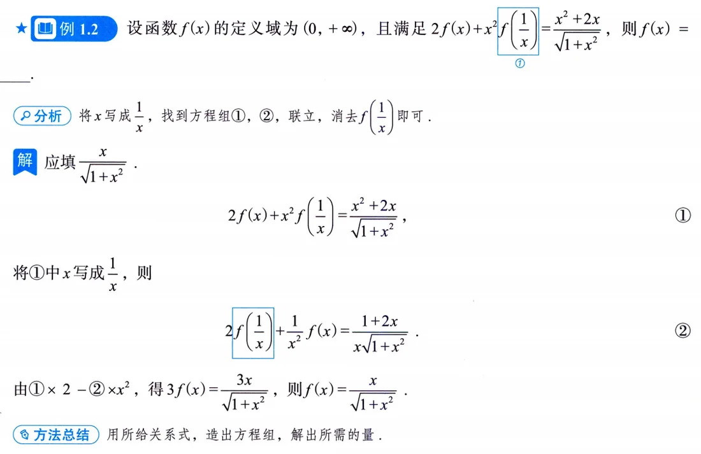
思路 关系式里同时出现 \(f(x)\) 与 \(f\!\left(\frac{1}{x}\right)\)，把 \(x\) 换成 \(\frac{1}{x}\) 再造一个方程，联立消去 \(f\!\left(\frac{1}{x}\right)\)。 要点 原式记为①：\(2f(x)+x^2f\!\left(\dfrac{1}{x}\right)=\dfrac{x^2+2x}{\sqrt{1+x^2}}\)；将①中 \(x\) 写成 \(\dfrac{1}{x}\)，得②：\(2f\!\left(\dfrac{1}{x}\right)+\dfrac{1}{x^2}f(x)=\dfrac{1+2x}{x\sqrt{1+x^2}}\)。由①\(\times2-\)②\(\times x^2\) 得 \(3f(x)=\dfrac{3x}{\sqrt{1+x^2}}\)，故 \(f(x)=\dfrac{x}{\sqrt{1+x^2}}\)。 注 同款套路还有 \(f(x)+xf(-x)=x\) 型：写 \(f(-x)-xf(x)=-x\) 消 \(f(-x)\)。对应法则与所用字母无关，\(f(x)=x^2\) 则 \(f\!\left(\frac{1}{x}\right)=\frac{1}{x^2}\)。
例1.3 反双曲正弦的反函数
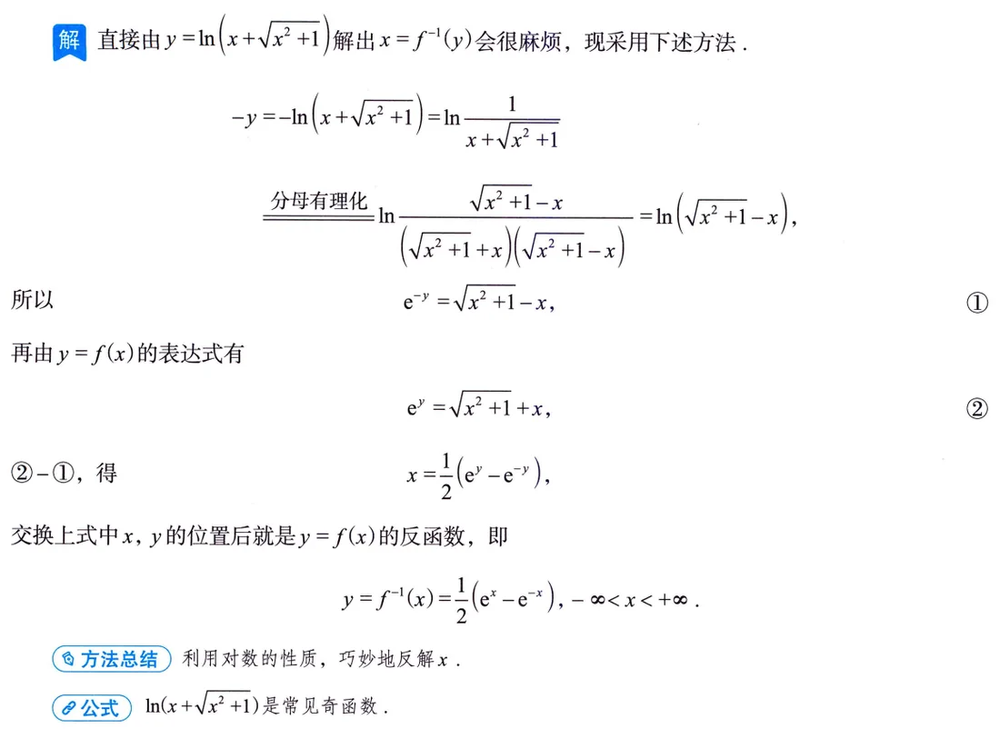
思路 直接从 \(y=\ln(x+\sqrt{x^2+1})\) 反解 \(x\) 很繁；借 \(-y=-\ln(x+\sqrt{x^2+1})=\ln(\sqrt{x^2+1}-x)\)（分母有理化）造出 \(\mathrm{e}^{\pm y}\) 两条方程，相减消根号。 要点 \(\mathrm{e}^{-y}=\sqrt{x^2+1}-x\) ①，\(\mathrm{e}^{y}=\sqrt{x^2+1}+x\) ②；②\(-\)① 得 \(x=\dfrac{1}{2}(\mathrm{e}^{y}-\mathrm{e}^{-y})\)；交换 \(x,y\) 得 \(y=f^{-1}(x)=\dfrac{1}{2}(\mathrm{e}^{x}-\mathrm{e}^{-x})\)，\(-\infty<x<+\infty\)。 注 \(y=\ln(x+\sqrt{x^2+1})\) 叫反双曲正弦（奇函数），\(\frac{\mathrm{e}^x-\mathrm{e}^{-x}}{2}\) 是双曲正弦（奇），\(\frac{\mathrm{e}^x+\mathrm{e}^{-x}}{2}\) 是双曲余弦（偶，悬链线）。两个"三基"函数互为反函数，正好印证定义1.3 的三条结论。
例1.5 分段函数的复合
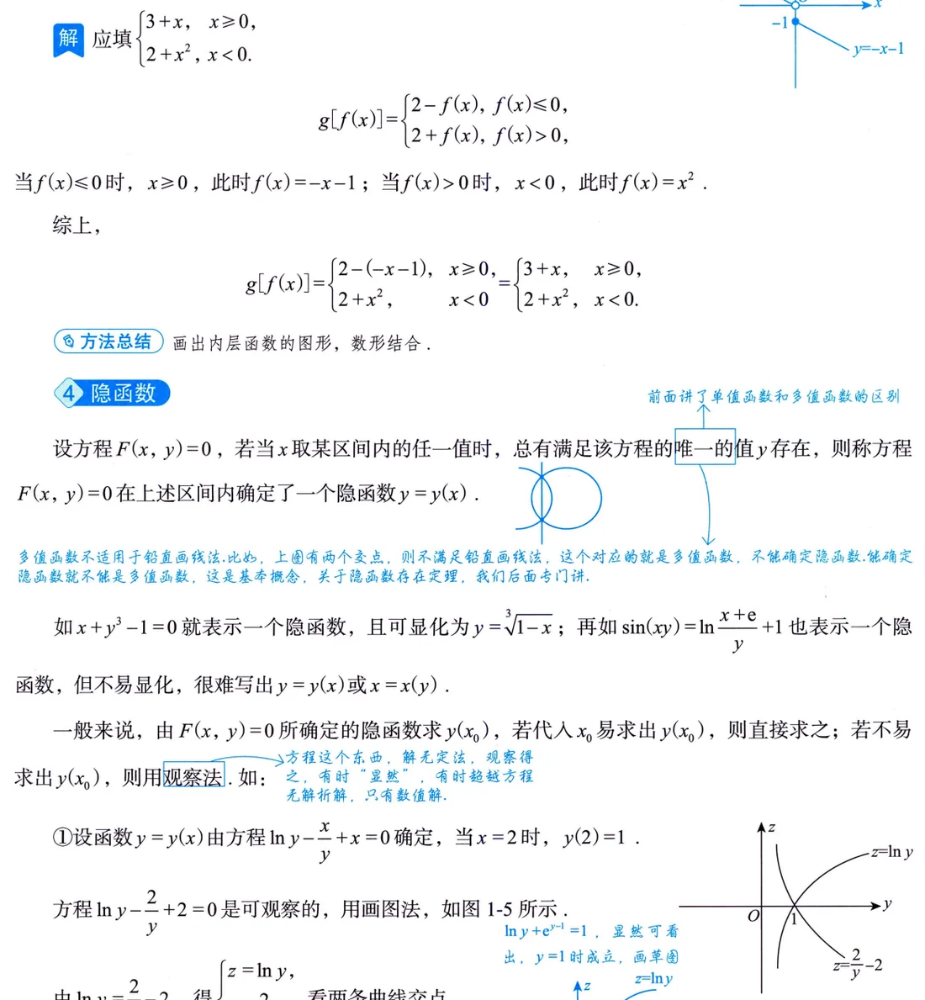
思路 求 \(g[f(x)]\)，外层 \(g\) 是分段函数，分界线在"内层函数值的正负"。先算出 \(f(x)\) 在各段上的符号，再对号代入 \(g\)——数与形结合（原书引华罗庚语："数无形时少直觉，形少数时难入微，数形结合百般好"）。 要点 \(f(x)=\begin{cases}x^2,&x<0,\\ -x-1,&x\ge0.\end{cases}\) 当 \(x<0\) 时 \(f(x)=x^2>0\)，代入 \(g\) 的正段：\(g[f(x)]=2+x^2\)；当 \(x\ge0\) 时 \(f(x)=-x-1<0\)，代入负段：\(g[f(x)]=2-(-x-1)=x+3\)。于是 \[g[f(x)]=\begin{cases}x^2+2,&x<0,\\ x+3,&x\ge0.\end{cases}\] 注 复合的分段点由"内层函数值"决定，不是由 \(x\) 的分段点直接继承——想清楚这一层，此类题全是送分题。
例1.6 证明函数有界
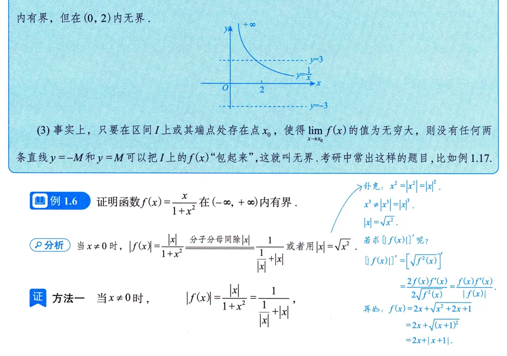
思路 证 \(f(x)=\dfrac{x}{1+x^2}\) 在 \((-\infty,+\infty)\) 内有界，就是找 \(M\)。分母配方凑均值不等式 \(\frac{a+b}{2}\ge\sqrt{ab}\)（\(a,b>0\)）。 要点 对 \(x\ne0\)，由均值不等式 \(\dfrac{1}{|x|}+|x|\ge2\sqrt{\dfrac{1}{|x|}\cdot|x|}=2\)，得 \[\left|\frac{x}{1+x^2}\right|=\frac{|x|}{1+x^2}=\frac{1}{\frac{1}{|x|}+|x|}\le\frac{1}{2};\] 又 \(x=0\) 时 \(f(0)=0\)。故取 \(M=\frac{1}{2}\)，对一切 \(x\in(-\infty,+\infty)\) 都有 \(|f(x)|\le M\)，\(f(x)\) 在 \(\mathbb{R}\) 内有界。 注 "证有界"三步：指明区间 \(\to\) 找 \(M\)（放缩）\(\to\) 逐点验证 \(|f(x)|\le M\)。均值不等式、\(|\sin x|\le1\)、\(|\arctan x|<\frac{\pi}{2}\) 都是常用放缩工具。
例1.7 \(|f(x)|\) 与 \(f(|x|)\) 的性态（选择题）
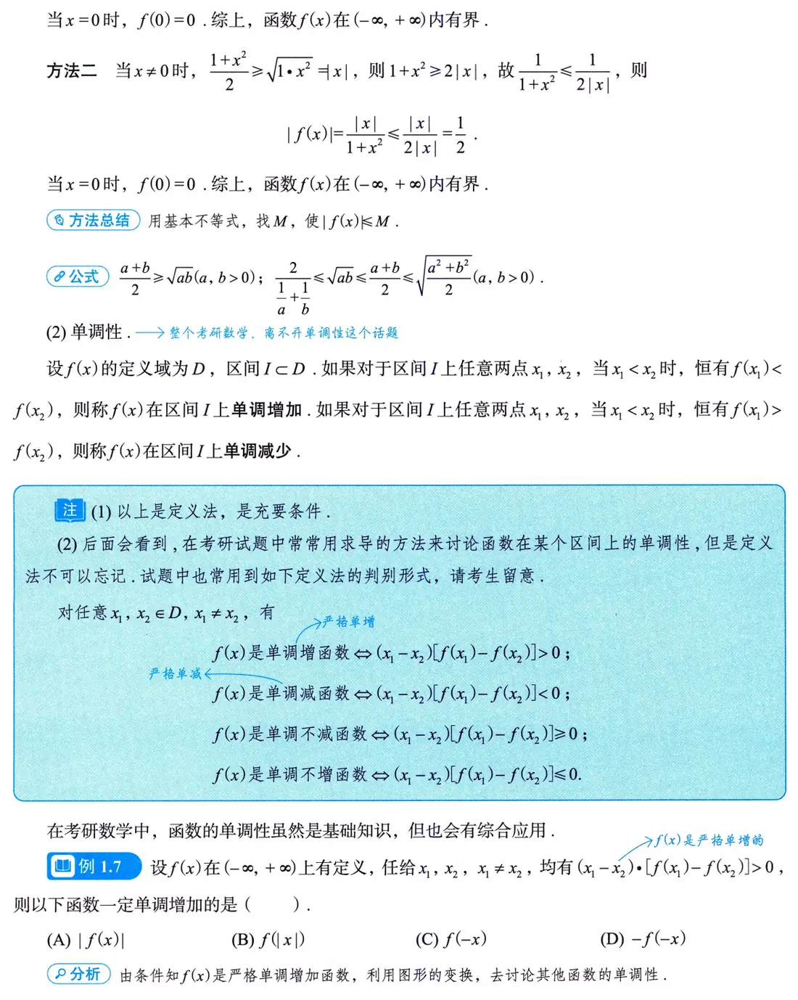
思路 题面考查由 \(y=f(x)\) 的图像作 \(y=|f(x)|\)（保留 \(x\) 轴上方、下方部分翻上去）与 \(y=f(|x|)\)（保留 \(y\) 轴右侧、去掉左侧后把右侧关于 \(y\) 轴对称过来）之后单调性如何变化。逐项排除。 要点 \(|f(x)|\) 的单调性与 \(f(x)\) 的正负相关（\(f<0\) 的段上单调性反转）；\(f(|x|)\) 是偶函数，在 \((-\infty,+\infty)\) 上无单调性（整体），故选 (D)。 注 方法总结（原书）：\(f(ax)\)、\(af(x)\) 等图像变换参考附录 1；对称三公式（\(f(x)\) 与 \(f(-x)\)、\(-f(x)\)、\(-f(-x)\)）配套记忆。
例1.13 取整函数的性态
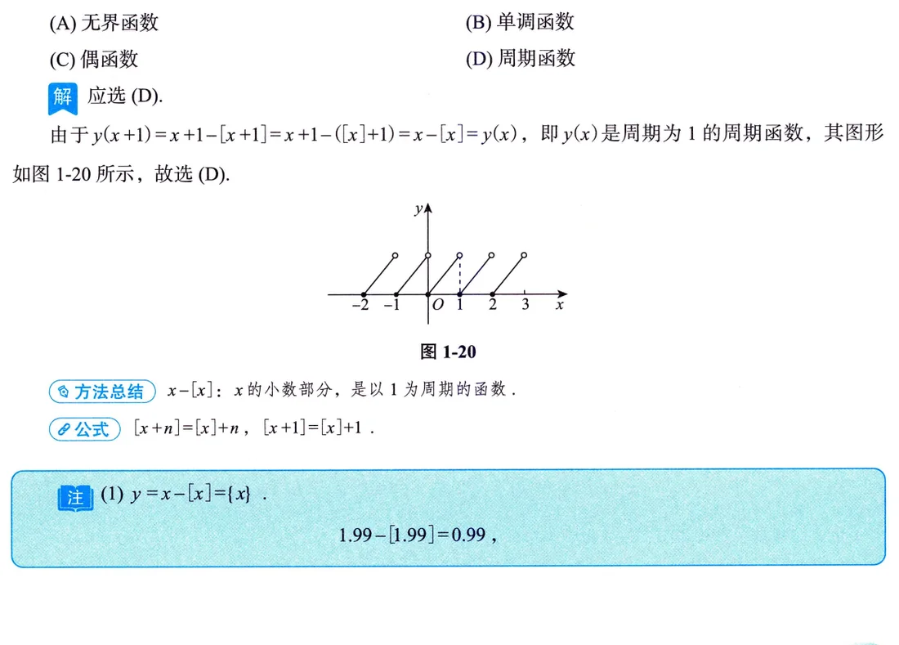
思路 \(y=x-[x]\) 是 \(x\) 的小数部分，验证 \(y(x+1)\) 是否回到 \(y(x)\)。 要点 \(y(x+1)=x+1-[x+1]=x+1-([x]+1)=x-[x]=y(x)\)，是以 \(1\) 为周期的周期函数，选 (D)。 注 值域 \([0,1)\) 有界、锯齿形不单调、非奇非偶，其余三项顺手排除。
例1.14 已知极限求极限
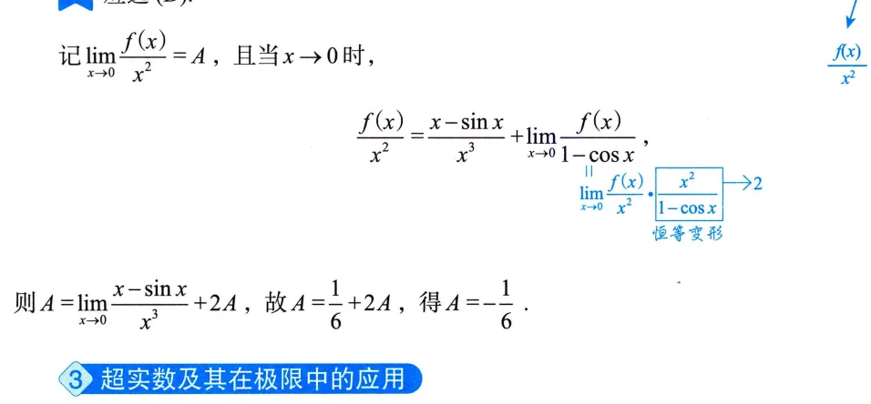
题干：已知 \(\lim\limits_{x\to0}\dfrac{f(x)}{x^2}\) 存在，且 \(f(x)=\dfrac{x-\sin x}{x}+x^2\lim\limits_{x\to0}\dfrac{f(x)}{1-\cos x}\)，求 \(\lim\limits_{x\to0}\dfrac{f(x)}{x^2}\)。
思路 待求极限 \(A\) 就藏在 \(f(x)\) 的表达式里，两边除以 \(x^2\) 建立关于 \(A\) 的方程。 要点 记 \(A=\lim\limits_{x\to0}\dfrac{f(x)}{x^2}\)，则 \(\dfrac{f(x)}{x^2}=\dfrac{x-\sin x}{x^3}+\dfrac{f(x)}{x^2}\cdot\dfrac{x^2}{1-\cos x}\)，其中 \(\dfrac{x^2}{1-\cos x}\to2\)，且 \(\lim\limits_{x\to0}\dfrac{x-\sin x}{x^3}=\dfrac{1}{6}\)，于是 \(A=\dfrac{1}{6}+2A\)，解得 \(A=-\dfrac{1}{6}\)，选 (D)。 注 关键动作是"极限号后面的整体 \(\lim\limits_{x\to0}\frac{f(x)}{1-\cos x}\) 与 \(A\) 之间的换算"：\(\frac{f(x)}{1-\cos x}=\frac{f(x)}{x^2}\cdot\frac{x^2}{1-\cos x}\)，两极限相乘。这一步不熟，方程列不出来。
例1.15 单侧极限与 \(\mathrm{e}^{\frac{1}{x-1}}\)
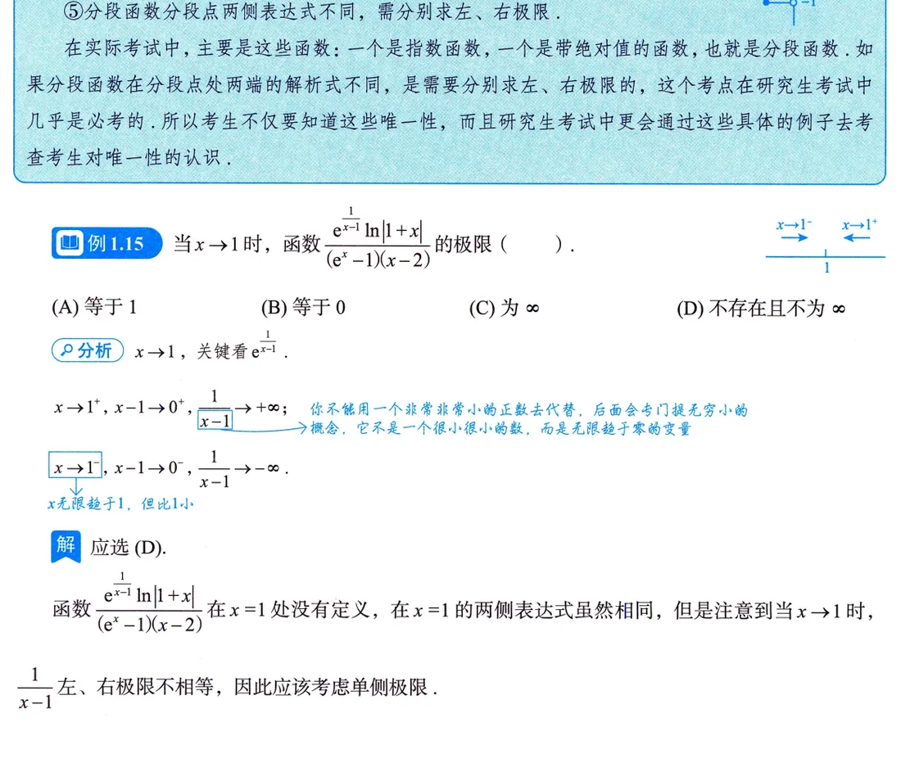
思路 关键因子 \(\mathrm{e}^{\frac{1}{x-1}}\)：\(x\to1^{+}\) 时 \(\frac{1}{x-1}\to+\infty\)，指数爆炸；\(x\to1^{-}\) 时 \(\frac{1}{x-1}\to-\infty\)，指数归零。 要点 \(x\to1^{-}\) 时分子中 \(\mathrm{e}^{\frac{1}{x-1}}\to0\)、\(\ln|1+x|\to\ln2\)，故分子 \(\to0\)；而分母 \((\mathrm{e}^{x}-1)(x-2)\to(\mathrm{e}-1)\cdot(-1)\ne0\)，于是 \(\lim\limits_{x\to1^{-}}\dfrac{\mathrm{e}^{\frac{1}{x-1}}\ln|1+x|}{(\mathrm{e}^{x}-1)(x-2)}=0\)；而 \(x\to1^{+}\) 时 \(\mathrm{e}^{\frac{1}{x-1}}\to+\infty\)，该式 \(\to\infty\)。一侧为 \(0\) 一侧为 \(\infty\)，极限不存在且不为 \(\infty\)，选 (D)。 注 见到 \(\mathrm{e}^{\infty}\) 必须分 \(\mathrm{e}^{+\infty}\) 与 \(\mathrm{e}^{-\infty}\) 讨论；例1.37 数第二类间断点时还要用它。
例1.16 用 \(\varepsilon\)-\(\delta\) 定义证明极限
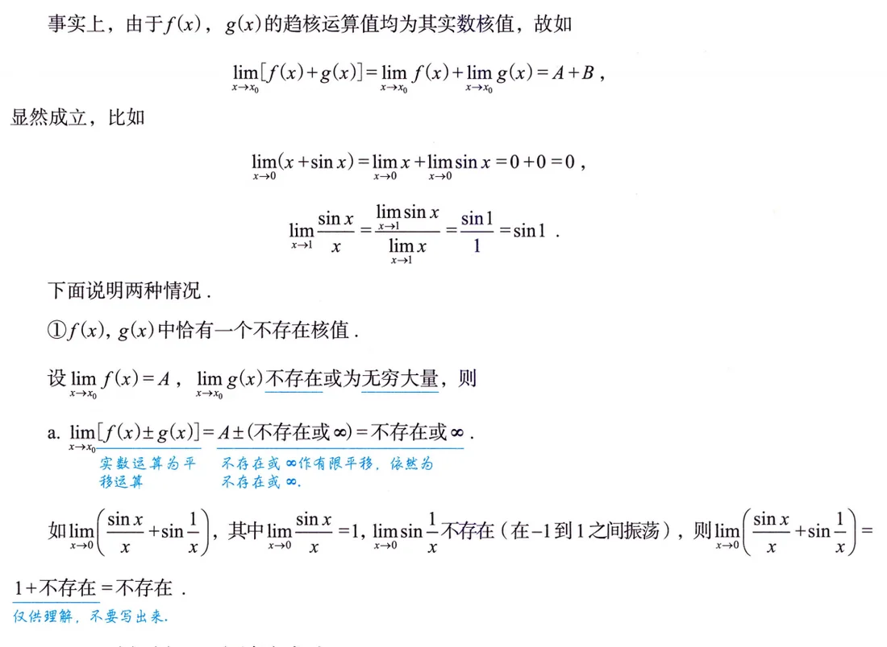
思路 证明 \(\lim\limits_{x\to1}\dfrac{x^3-1}{x-1}=3\)：先把 \(\left|\frac{x^3-1}{x-1}-3\right|\) 整理成 \(|x-1|\) 乘一个有界因子，再放大。 要点 \[\left|\frac{x^3-1}{x-1}-3\right|=\left|\frac{(x-1)(x^2+x+1)}{x-1}-3\right|=|x^2+x-2|=|x-1|\cdot|x+2|.\] 先不妨设 \(|x-1|<1\)（即 \(0<x<2\)），则 \(|x+2|<4\)；于是对任意 \(\varepsilon>0\)，取 \(\delta=\min\{1,\frac{\varepsilon}{4}\}\)，当 \(0<|x-1|<\delta\) 时 \(\left|\frac{x^3-1}{x-1}-3\right|<4\cdot\frac{\varepsilon}{4}=\varepsilon\)。证毕。 注 三段式套路：先限制（不妨设 \(|x-x_0|<1\)，给因子找界）\(\to\) 放大（\(|x+2|<4\)）\(\to\) 取 \(\delta=\min\)（两头都要管）。真题考定义证明时，这个"先限制再放大"的次序就是得分点。
例1.19 无穷小比阶定参数
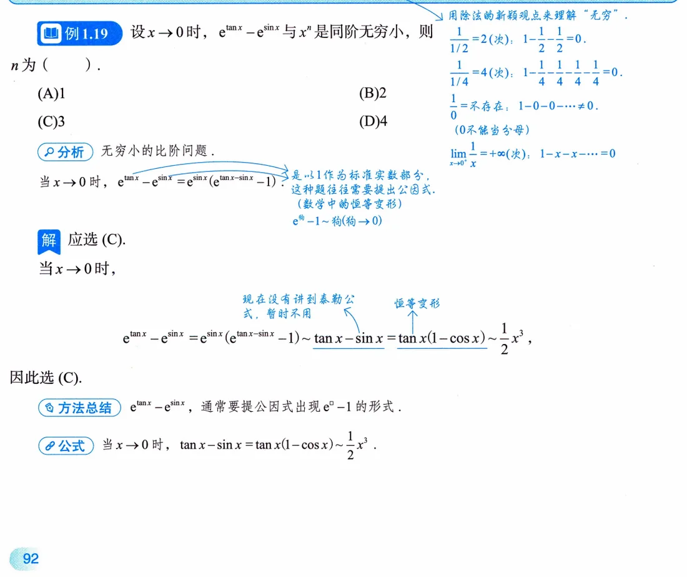
思路 指数差 \(\mathrm{e}^{\tan x}-\mathrm{e}^{\sin x}\) 先提公因式，凑出 \(\mathrm{e}^{0}-1\) 的形状。 要点 \(\mathrm{e}^{\tan x}-\mathrm{e}^{\sin x}=\mathrm{e}^{\sin x}\left(\mathrm{e}^{\tan x-\sin x}-1\right)\sim\tan x-\sin x=\tan x(1-\cos x)\sim x\cdot\dfrac{x^2}{2}=\dfrac{x^3}{2}\)。它与 \(x^n\) 同阶，故 \(n=3\)，选 (C)。 注 \(\tan x-\sin x=\tan x(1-\cos x)\sim\frac{1}{2}x^3\) 单独背下来，年年能用上。
例1.24 幂指函数（\(\frac{0}{0}\) 型）
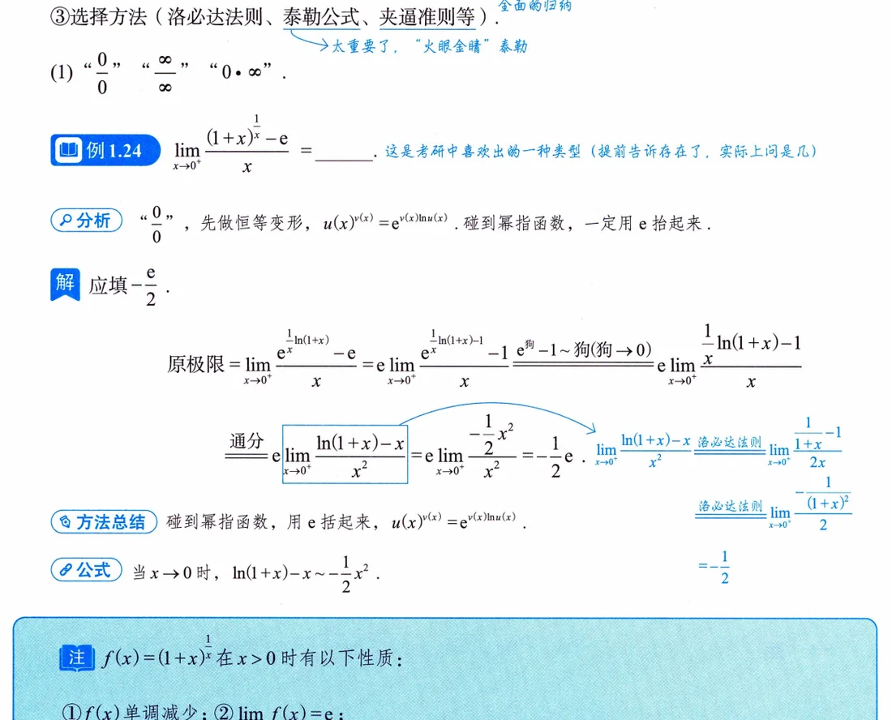
思路 碰到幂指函数一律用 \(\mathrm{e}\) 抬起来：\((1+x)^{\frac{1}{x}}=\mathrm{e}^{\frac{1}{x}\ln(1+x)}\)，再凑 \(\mathrm{e}^{\text{狗}}-1\sim\text{狗}\)。 要点 \[ \lim_{x\to0^{+}}\frac{(1+x)^{\frac{1}{x}}-\mathrm{e}}{x} =\mathrm{e}\lim_{x\to0^{+}}\frac{\mathrm{e}^{\frac{1}{x}\ln(1+x)-1}-1}{x} =\mathrm{e}\lim_{x\to0^{+}}\frac{\frac{1}{x}\ln(1+x)-1}{x} =\mathrm{e}\lim_{x\to0^{+}}\frac{\ln(1+x)-x}{x^{2}} =-\frac{\mathrm{e}}{2}. \] 应填 \(-\dfrac{\mathrm{e}}{2}\)。 注 顺手带走两个结论：\(\ln(1+x)-x\sim-\dfrac{x^2}{2}\)；\((1+x)^{\frac{1}{x}}-\mathrm{e}\sim-\dfrac{\mathrm{e}}{2}x\ (x\to0^{+})\)——原书配图把这批"0 附近的朋友圈"画成光环图，多积累一个是一个。
例1.25 有理函数极限（抓大头）
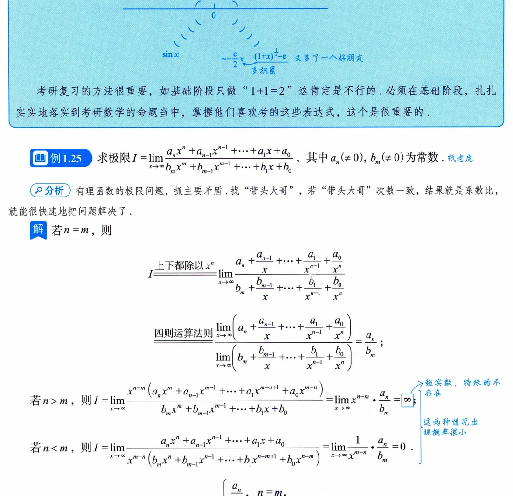
思路 有理函数 \(x\to\infty\) 的极限，抓最高次项（带头大哥），分子分母同除最高次幂。 要点 分子分母同除以 \(x\) 的最高次幂 \(x^{4}\)，其余项全是 \(\frac{1}{x}\) 量级、统统趋于零，只剩下分子、分母最高次项的系数之比，答案 \(0.4\)（即 \(\frac{2}{5}\)），选 (B)。 注 方向别搞反：\(x\to\infty\) 抓最高次项，\(x\to0\) 抓最低次项；含 \(\sqrt{x^2}\) 时注意 \(x<0\) 则 \(\sqrt{x^2}=|x|=-x\)（印P104）。
例1.26 由极限确定对应法则
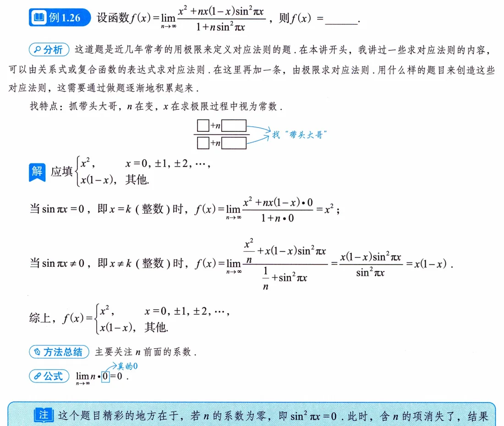
思路 \(n\to\infty\) 时把 \(x\) 当常数，抓 \(n\) 的系数（"带头大哥"）。系数 \((1-x)\sin^2\pi x\) 何时为零，答案就在哪里分岔。 要点 \(\sin\pi x=0\)（即 \(x=k\) 为整数）时 \(f(x)=\lim\limits_{n\to\infty}\dfrac{x^2+nx(1-x)\cdot0}{1+n\cdot0}=x^2\)；\(\sin\pi x\ne0\) 时分子分母同除以 \(n\)，得 \(f(x)=\dfrac{x(1-x)\sin^2\pi x}{\sin^2\pi x}=x(1-x)\)。于是 \[ f(x)=\begin{cases}x^{2},&x=0,\pm1,\pm2,\cdots,\\ x(1-x),&\text{其他}.\end{cases} \] 注 它的续集例1.38 拿这个 \(f\) 考间断点：整数点处左右极限都是 \(k(1-k)\)，与 \(f(k)=k^2\) 不等，全是可去间断点——只有第一类间断点，选 (B)。
例1.27 已知极限求极限（脱帽法）
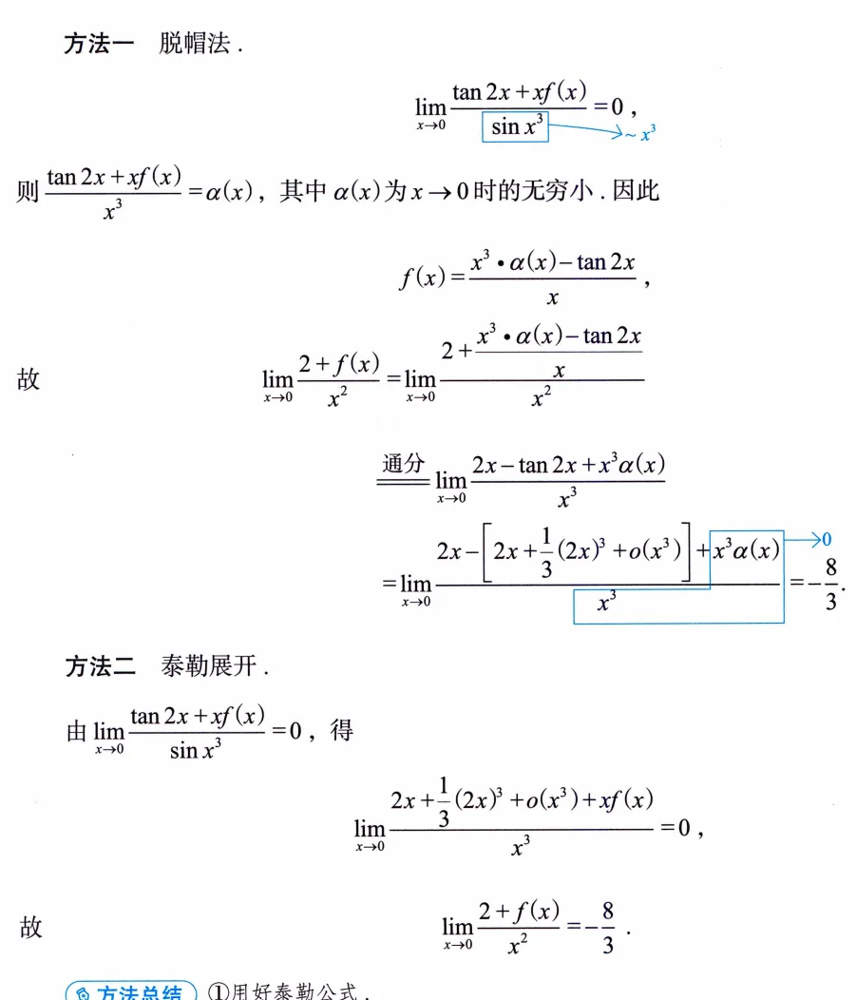
思路 已知 \(\lim\limits_{x\to0}\dfrac{\tan 2x+xf(x)}{\sin x^{3}}=0\)，求 \(f(x)\) 在 \(0\) 处的极限（原题为选择题）。两条路：方法一脱帽法——把"极限为 0"翻译成"等于一个无穷小 \(\alpha(x)\)"，解出 \(f(x)\)；方法二泰勒展开 \(\tan 2x\) 对照。 要点 脱帽：\(\dfrac{\tan 2x+xf(x)}{x^{3}}=\alpha(x)\)（\(\alpha\to0\)，其中 \(\sin x^3\to x^3\)），解出 \[f(x)=\frac{\alpha(x)\,x^{3}-\tan 2x}{x}=\alpha(x)\,x^{2}-\frac{\tan 2x}{x}\to0-2=-2.\] 注 "已知一个极限为 0，求另一个极限"是固定题型：脱帽（例1.14、例1.27）或泰勒对照（本讲自测题 1）二选一，本质上都是把极限条件变成函数方程。
例1.28 \(0\cdot\infty\) 型：\(\ln\) 的广义化与换元
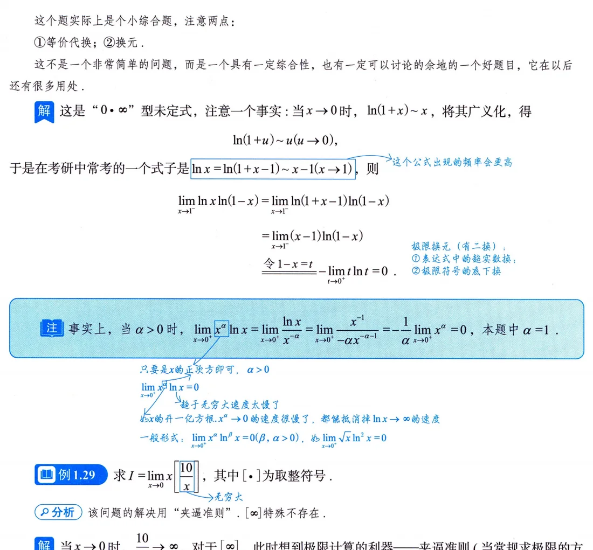
思路 求形如 \(\lim\limits_{x\to0}\dfrac{1}{x^{2}}\ln\dfrac{\sin x}{x}\) 的极限（题面以截图为准）。判型是 \(0\cdot\infty\)（\(\ln\frac{\sin x}{x}\to\ln1=0\)，外乘 \(\frac{1}{x^2}\to\infty\)）。原书点明两个动作：①等价代换（广义化）；②换元。 要点 把 \(\ln(1+x)\sim x\) 广义化：\(\ln(1+u)\sim u\ (u\to0)\)，这里取 \(u=\dfrac{\sin x}{x}-1\to0\)，则 \[\ln\frac{\sin x}{x}=\ln\left(1+\underbrace{\left(\frac{\sin x}{x}-1\right)}_{u}\right)\sim\frac{\sin x}{x}-1=\frac{\sin x-x}{x}\sim\frac{-\frac{x^{3}}{6}}{x}=-\frac{x^{2}}{6},\] 故原式 \(=\dfrac{-x^{2}/6}{x^{2}}=-\dfrac{1}{6}\)。 注 原书评价：这是个小综合题（等价代换+换元），"以后还有很多用处"。\(\sin x-x\sim-\frac{x^3}{6}\) 这种差函数等价是全题的临门一脚，由泰勒"上下同阶"现场可推。
例1.29 取整函数极限（速览详见图）
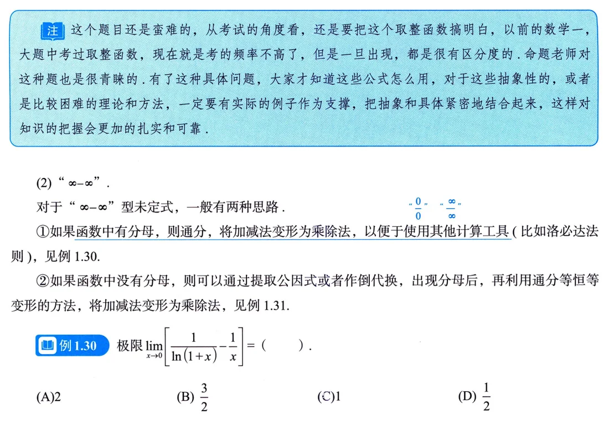
思路 涉及取整函数 \([x]\) 的极限题：利用 \(x-1<[x]\le x\) 夹逼或分整数/非整数讨论。 要点 原书注（大意）：这题还是蛮难的，要把取整函数搞明白——以前数学一在大题中考过取整函数，现在频率不高，但一旦出现区分度很高。具体题面与解答见截图。 注 取整函数三件套（定义、三条性质、\(x-[x]\) 图像）在本讲定义2.3，遇到 \([x]\) 先写 \(x-1<[x]\le x\)。
例1.30 \(\infty-\infty\) 型：通分+泰勒
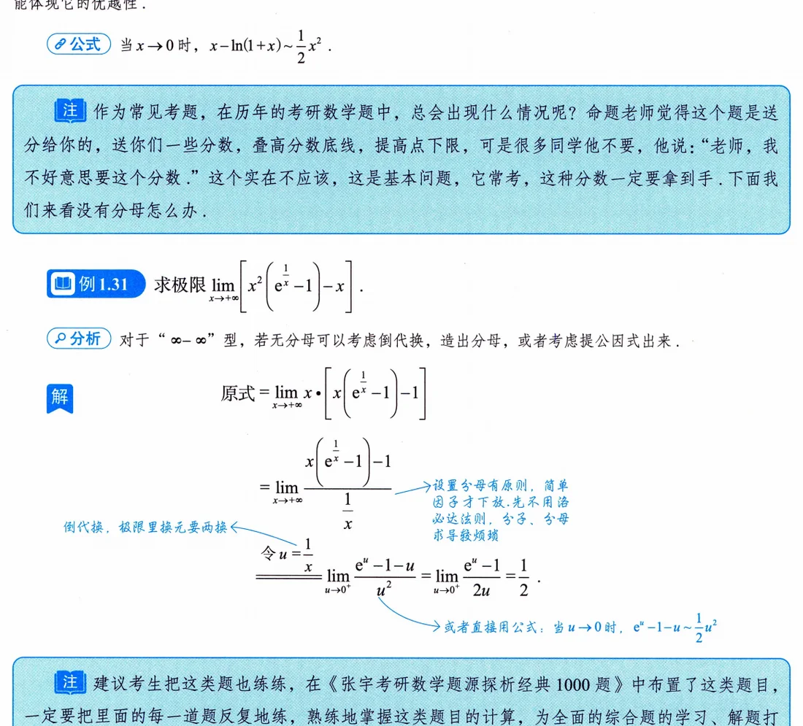
思路 求 \(\lim\limits_{x\to0}\left(\dfrac{1+\sin x}{x}-\dfrac{1}{\mathrm{e}^{x}-1}\right)\)。\(\infty-\infty\) 型先通分，化成 \(\frac{0}{0}\) 后分子用泰勒（幂次最低原则）。 要点 通分：\[\dfrac{(1+\sin x)(\mathrm{e}^{x}-1)-x}{x(\mathrm{e}^{x}-1)}.\] 分母 \(x(\mathrm{e}^{x}-1)\sim x^{2}\)；分子 \((1+\sin x)(\mathrm{e}^{x}-1)=\left(x+\frac{x^{2}}{2}+o(x^{2})\right)+\left(x^{2}+o(x^{2})\right)=x+\frac{3}{2}x^{2}+o(x^{2})\)，减去 \(x\) 余 \(\frac{3}{2}x^{2}+o(x^{2})\)。故原式 \(=\dfrac{3}{2}\)。 注 原书强调"很多问题不化简就计算会算不动"：\(\infty-\infty\) 通分、\(0\cdot\infty\) 下放、根式有理化、倒代换，都是先变形再选工具。这题与化简先行段（印P102）的示例是同一题，正文示例+编号例题两次出现，可见其典型性。
例1.33 连续性定参数
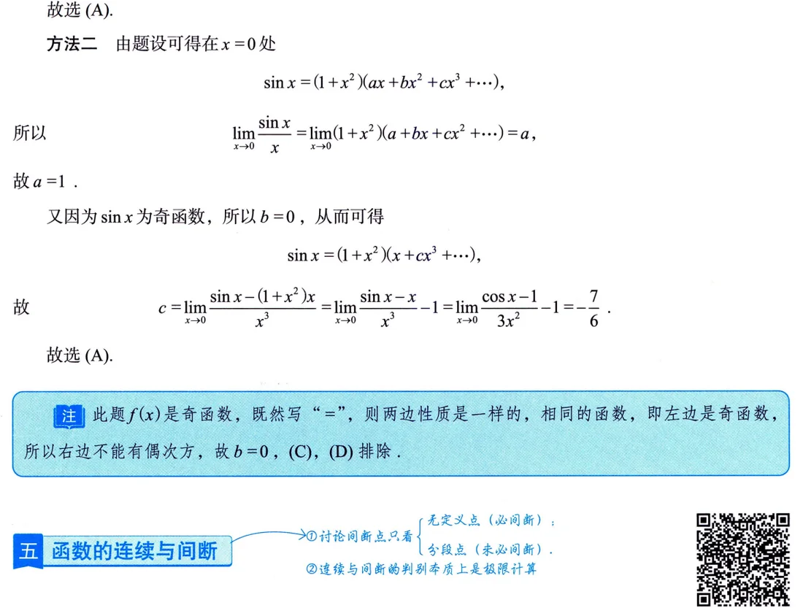
思路 \(f(x)=\begin{cases}\dfrac{\sin 2x}{x},&x\ne0,\\ a,&x=0,\end{cases}\) 在 \(x=0\) 处连续，求 \(a\)。连续即三值合一，\(a\) 必须等于极限值。 要点 \(\lim\limits_{x\to0}\dfrac{\sin 2x}{x}=\lim\limits_{x\to0}\dfrac{2x}{x}=2\)（狗记号），故 \(a=2\)；若 \(a\ne2\)，\(x=0\) 就是可去间断点。 注 "连续定参"与"间断点分类"是一枚硬币的两面：参数等于极限值则连续，否则按左右极限情况归类（本讲自测题 4 同款）。
例1.34 间断点判断（含绝对值）
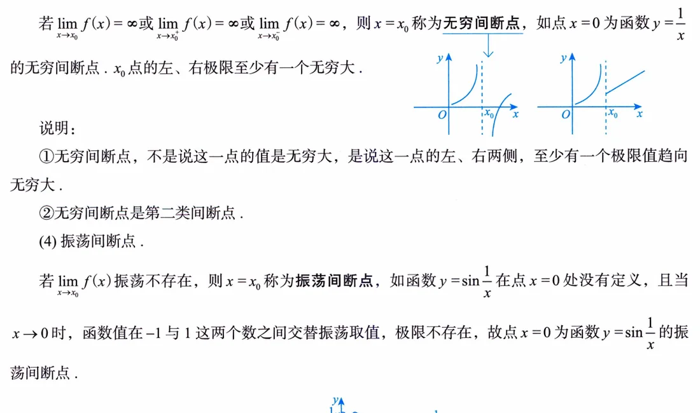
思路 \(f(x)=\dfrac{x^{2}-x}{|x|\,(x-1)}\)：无定义点 \(x=0\)（分母为零）与 \(x=1\)。逐点算左右极限，对号入座。 要点 在 \(x=0\) 处 \(f(x)=\dfrac{x(x-1)}{|x|(x-1)}=\dfrac{x}{|x|}\)，左极限 \(-1\)、右极限 \(1\)，左右都存在但不等，\(x=0\) 是跳跃间断点（第一类）。在 \(x=1\) 处 \(f(x)=\dfrac{x}{|x|}\cdot\dfrac{x-1}{x-1}\to1\)，极限存在但函数无定义，\(x=1\) 是可去间断点（第一类）。 注 含 \(|x|\) 的分式在 \(x=0\) 两侧天然变号，与 \(\frac{x}{|x|}\)、\(\mathrm{e}^{1/x}\) 同属"必分左右"家族。
例1.36 \(f(x)=\dfrac{x}{\tan x}\) 的间断点
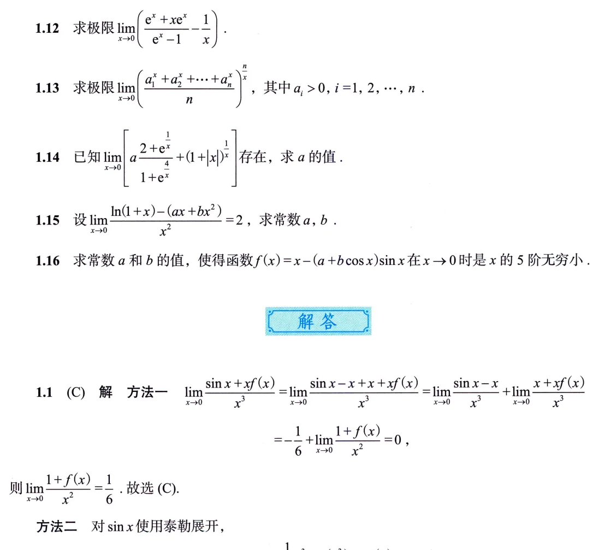
思路 嫌疑点有两族：\(\tan x=0\) 的点 \(x=k\pi\)，以及 \(\tan x\) 无定义的点 \(x=k\pi+\frac{\pi}{2}\)——第二族最容易被漏掉。 要点 \(x=0\)：\(\lim\limits_{x\to0}\frac{x}{\tan x}=1\)，极限存在但无定义，可去间断点；\(x=k\pi\ (k\ne0)\)：\(\tan x\to0\) 而 \(x\to k\pi\ne0\)，\(|f|\to\infty\)，无穷间断点（第二类）；\(x=k\pi+\frac{\pi}{2}\)：\(\tan x\to\infty\)，\(f\to0\)，极限存在但无定义，可去间断点。 注 数嫌疑点时"分母为零的"与"函数无定义的"要分开列：\(\tan x\) 自己有洞的地方，\(\frac{x}{\tan x}\) 反而可能可去。
例1.37 \(f(x)=\dfrac{\mathrm{e}^{1/x}-1}{\mathrm{e}^{1/x}+1}\) 的间断点
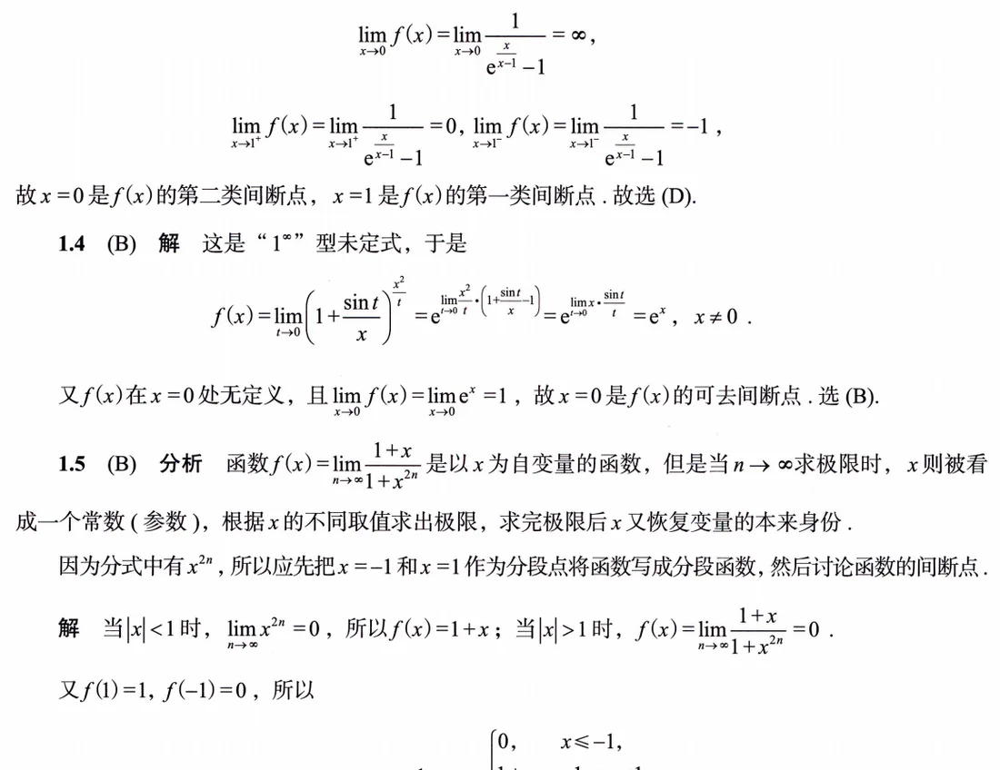
思路 唯一嫌疑 \(x=0\)（无定义点），且含 \(\mathrm{e}^{1/x}\) 必分左右。 要点 \(x\to0^{+}\)：\(\frac{1}{x}\to+\infty\)，\(\mathrm{e}^{1/x}\to+\infty\)，\(f\to1\)；\(x\to0^{-}\)：\(\frac{1}{x}\to-\infty\)，\(\mathrm{e}^{1/x}\to0\)，\(f\to\dfrac{0-1}{0+1}=-1\)。左右极限都存在但不相等，\(x=0\) 是跳跃间断点（第一类）。 注 与例1.15 同一引擎（\(\mathrm{e}^{\pm\infty}\) 双侧讨论），一个考"极限不存在"，一个考"间断点归类"，本质一道题。
例1.38 极限函数的间断点
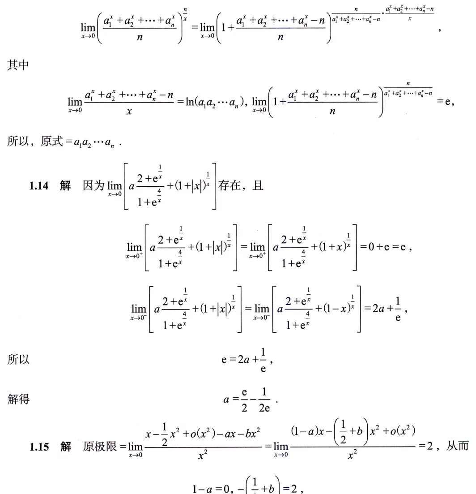
思路 \(f(x)=\lim\limits_{n\to\infty}\dfrac{x^{2}+n x(1-x)\sin^{2}\pi x}{1+n\sin^{2}\pi x}\)：先用例1.26 的方法定出 \(f(x)\) 的分段表达式，再逐点判断间断类型（原题为选择题）。 要点 \(\sin\pi x=0\)（\(x\) 为整数）时 \(f(x)=x^{2}\)；否则分子分母同除以 \(n\) 得 \(f(x)=x(1-x)\)。在整数点 \(x=k\) 处，左右极限都是 \(k(1-k)\)，存在但不等于函数值 \(k^{2}\)（\(k(1-k)=k^2\Rightarrow k=\frac12\) 非整数），故每个整数点都是可去间断点——\(f(x)\) 只有第一类间断点，选 (B)。 注 这类"先求极限函数、再论连续"的两段式大题，把 L1 两大考点（抓大头、间断点分类）串在一根线上，值得整题重做一遍。
其余例题速览
以下例题题面较长或以图形辨析为主，这里给一句话定位，做题时直接翻原书对应页：
- 例1.4（印P52–54 附近）：反函数与复合函数的辨析题，配合水平画线法与 \(g(D)\subset D_1\) 条件。
- 例1.8（印P59 附近）：奇偶性判断，综合"拆奇偶之和""复合口诀""内层换 \(-x\) 直接验证"。
- 例1.9（印P61 附近）：周期函数判断，用 \(f(ax+b)\) 周期 \(\frac{T}{|a|}\)、\(\cos^2x=\frac{1+\cos2x}{2}\) 一类结论。
- 例1.10（印P62–63）：乘积形式函数的最值问题，先取对数（对数求导法思想）再求导，解 \(12x^2-14x+3=0\) 取 \(x=\frac{7-\sqrt{13}}{12}\)。
- 例1.11（印P64–65 附近）：指数、对数函数图像与增长速度的应用。
- 例1.12（印P66 附近）：初等函数与非初等函数（分段函数）的辨认。
- 例1.17、例1.18（印P83–86 附近）：局部保号性的概念选择题，考"脱帽严格、戴帽非严格"的每个方向。
- 例1.20（印P94–96 附近）：四则运算法则两条反用结论的定参数题。
- 例1.21、例1.22（印P97–100 附近）：泰勒两条展开原则（上下同阶、幂次最低）的计算与差函数等价的推导。
- 例1.23（印P101–102 附近）：化简先行（负代换、倒代换）的 \(\frac{0}{0}\) 计算题。
- 例1.31、例1.32（印P112–113 附近）：连续与极限关系的选择题、分段函数连续定参数。
- 例1.35（印P116 附近）：间断点类型概念选择题。
易错点与技巧
- \(\mathrm{e}^{\infty}\) 必须拆双侧讨论：\(\lim\limits_{u\to+\infty}\mathrm{e}^u=+\infty\)，\(\lim\limits_{u\to-\infty}\mathrm{e}^u=0\)，凡见 \(\mathrm{e}^{\frac{1}{x-1}}\)、\(\mathrm{e}^{\frac{1}{x}}\) 先分左右（印P84、印P118）。
- 洛必达是单向箭头："右存在则左存在"，但 \(\lim\frac{f}{g}\) 存在推不出 \(\lim\frac{f'}{g'}\) 存在，反例 \(\frac{x^2\sin\frac{1}{x}}{x}\)；数列极限更不能直接用（印P95）。
- 等价无穷小替换的本质是"趋核速度相同的因子整体替换"（印P79–80），只能换乘除因子：\(\lim\limits_{x\to0}\frac{x-\sin x}{x^3}\) 若把 \(\sin x\) 换成 \(x\) 得 \(0\)，正确答案是 \(\frac{1}{6}\)。
- 谈有界必须先指明区间 \(I\subset D\)，不指区间没有意义；"极限存在 \(\Rightarrow\) 局部有界"是局部的、且是充分不必要（\(\sin x\) 反例）（印P56、印P82）。
- 抓大头看方向：\(x\to\infty\) 抓最高次项，\(x\to0\) 抓最低次项；\(x<0\) 时别忘了 \(\sqrt{x^2}=|x|=-x\)（印P104）。
- \(0\cdot\infty\) 型下放分母有原则：简单因式（\(x^{\alpha}\)、\(\mathrm{e}^{\beta x}\)、\(\sin rx\)）才下放，\(\ln x\)、\(\arctan x\)、\(\arcsin x\) 留在分子，如 \(\lim\limits_{x\to0^{+}}x\ln x=\lim\limits_{x\to0^{+}}\frac{\ln x}{1/x}=0\)（印P105–106）。
- 找间断点只看无定义点和分段点；跳跃间断点与 \(f(x_0)\) 取值无关；区间端点不谈间断（印P113）。
- 无界变量不是无穷大：\(\frac{1}{x}\sin\frac{1}{x}\) 在 \(x\to0\) 时无界但不是无穷大，第二类间断点判定时别混（印P82）。
- \(\tan x\) 的无定义点 \(x=k\pi+\frac{\pi}{2}\) 是 \(\frac{x}{\tan x}\) 型函数的隐藏嫌疑点，漏数一个全盘皆错（例1.36，印P117）。
- 泰勒展开两条原则别用混：\(A/B\) 上下同阶（分母 \(x^k\) 分子展到 \(x^k\)），\(A-B\) 幂次最低（展到系数首次不同的最低次幂）；多展浪费、少展出错（印P98–100）。
- \(1^{\infty}\) 用简化公式 \(\lim u^v=\mathrm{e}^{\lim v(u-1)}\) 后，最后一步要整体写回 \(\mathrm{e}^{(\cdots)}\)，只算指数不写底数是最冤的丢分（印P102）。
- 夹逼准则需要"两头极限存在且相等"；两头之差趋于零（\(\lim[g-h]=0\)）不够用，书上 \(x+\frac{1}{x+1}\) 系列反例要能复述（印P101）。
- 奇偶性先验定义域关于原点对称，再谈其他；求导一次奇偶互换（\(f\) 奇 \(\Rightarrow f'\) 偶），后面积分再换回来。
- "已知极限求另一极限"优先脱帽（例1.14、例1.27）或泰勒对照：把极限条件翻译成带 \(o(\cdot)\) 的函数方程，别对着极限号发呆。
考点与方法补充（站注）
本节是站方补充，不是原书内容；数学事实以原书为准，考频数据与规划建议来自公开真题统计与经验贴调研（2026-09 汇总）。
考频定位（站注·真题大数据）：极限计算是考研数学第一梯队考点——近 15 年几乎每年至少 2 题（选择/填空 + 解答），与导数几何应用、积分计算、微分方程等同列高数"60%+ 分值"的第一梯队板块。第 1 讲对应的直接考法：七种未定式计算、泰勒展开求极限、间断点判别与分类；幂指函数、隐函数（概念层面）也常作命题素材。这一讲投入再多时间都不亏：它同时是 L2–L18 所有计算的地基。
高频题型清单（站注，按原书例题对号）：
- 七种未定式直接计算：例1.24（幂指 \(\frac{0}{0}\)）、例1.28（\(0\cdot\infty\)）、例1.30（\(\infty-\infty\)）——先判型后计算，正好对应张宇"判定类型，做好计算"的提法（强化36讲第 1 讲主题）。
- 已知一极限求另一极限（脱帽/泰勒对照）：例1.14、例1.27，加上本讲自测题 1。
- 无穷小比阶定参数：例1.19 及差函数等价系列。
- 间断点判别与分类：例1.34、例1.36、例1.37、例1.38——大题常客，最爱考 \(\mathrm{e}^{1/x}\) 双侧与 \(\tan x\) 隐藏无定义点。
- 抓大头/倒代换：例1.25、例1.26、例1.38。
- \(\varepsilon\)-\(\delta\) 与保号性概念题：例1.16、例1.17、例1.18——数一数二概念辨析选择题的常备素材。
张宇方法论的印证（站注）：
- 「狗」记号：原书等价无穷小部分（印P91）明确把趋于 0 的量记作"狗"，\(\sin\)狗 \(\sim\) 狗、\(\ln(1+\)狗\()\) \(\sim\) 狗——本讲例1.28 的 \(\ln(1+u)\sim u\) 广义化就是"狗记号"的正式使用。等价无穷小本质是泰勒展开在固定阶数的特例，这一层想通了，差函数等价系列不用背、现场推。
- 张宇公开课反复强调"尽快结束纯听课阶段，自己动手最重要"、"计算能力是决定分数的第一因素"。本讲 38 道例题建议全部亲手过一遍，尤其计算题不许看一眼就跳。
- 证明题不能放弃：\(\varepsilon\)-\(\delta\)（例1.16）与保号性推理是中值定理证明题（L6）的启蒙，现在偷懒后面还账。
与后续讲的衔接（站注）：
- 泰勒公式 → L2（数列极限）与 L6（中值定理）：本讲只带佩亚诺余项，L6 会补拉格朗日余项并用于证明；"上下同阶/幂次最低"两条原则会一直用到 L8 变限积分求极限。
- 连续与间断 → L3（可导与连续的关系：可导必连续、连续不一定可导）、L8（\(\ln2\) 那个 \(n\) 项和反例在定积分定义处正式计算）。
- 无穷多个无穷小之和（\(\ln2\)）、夹逼准则 → L2 数列极限两大准则，真题大题两大套路。
- 取整函数、\(\mathrm{e}^{1/x}\)、\(\frac{x}{|x|}\)：本讲三大"命题明星结构"，真题隔几年换件衣服再考。
刷题与检验（站注）：基础阶段配《300 题》对应章节；检验标准可参考"随机抽 5 道大题独立完成、正确率 \(\ge\) 90%"。本讲末练习题（印P122 起：选择 8、填空 8、解答 6）是原书自带的闭环，别浪费。
知识清单自测
自测题
1. 已知 \(\lim\limits_{x\to0}\dfrac{\sin x+xf(x)}{x^{3}}=0\)，求 \(\lim\limits_{x\to0}\dfrac{1+f(x)}{x^{2}}\)。
查看答案
解 用泰勒展开 \(\sin x=x-\dfrac{x^{3}}{6}+o(x^{3})\)，代入已知式：
\[\lim_{x\to0}\frac{x-\dfrac{x^{3}}{6}+o(x^{3})+xf(x)}{x^{3}}=\lim_{x\to0}\left(\frac{1+f(x)}{x^{2}}-\frac{1}{6}\right)=0,\]
故所求极限为 \(\dfrac{1}{6}\)。（也可脱帽：\(\dfrac{\sin x+xf(x)}{x^{3}}=0+\alpha(x)\)，\(\lim\alpha=0\)，解出 \(xf(x)=-\sin x+o(x^{3})\)，再算 \(\lim\limits_{x\to0}\dfrac{x-\sin x+o(x^{3})}{x^{3}}=\dfrac{1}{6}\)。）
2. 讨论 \(f(x)=\dfrac{1}{\mathrm{e}^{\frac{x}{x-1}}-1}\) 的间断点及其类型。
查看答案
解 无定义点 \(x=0,1\)。\(x\to0\) 时 \(\dfrac{x}{x-1}\to0\)，分母 \(\mathrm{e}^{0}-1\to0\)，故 \(\lim\limits_{x\to0}f(x)=\infty\)，\(x=0\) 是第二类（无穷）间断点。\(x\to1^{+}\) 时 \(\dfrac{x}{x-1}\to+\infty\)，\(\mathrm{e}^{\frac{x}{x-1}}\to+\infty\)，故 \(\lim\limits_{x\to1^{+}}f(x)=0\)；\(x\to1^{-}\) 时 \(\dfrac{x}{x-1}\to-\infty\)，\(\mathrm{e}^{\frac{x}{x-1}}\to0\)，故 \(\lim\limits_{x\to1^{-}}f(x)=\dfrac{1}{0-1}=-1\)。左右极限都存在但不相等，\(x=1\) 是第一类（跳跃）间断点。
3. 求 \(\lim\limits_{x\to\infty}\left(\dfrac{x+2}{x-1}\right)^{x}\)。
查看答案
解 \[\lim_{x\to\infty}\left(\frac{x+2}{x-1}\right)^{x}=\lim_{x\to\infty}\frac{\left(1+\frac{2}{x}\right)^{x}}{\left(1-\frac{1}{x}\right)^{x}}=\frac{\mathrm{e}^{2}}{\mathrm{e}^{-1}}=\mathrm{e}^{3}.\]
4. 设 \(f(x)=\begin{cases}(\cos x)^{\frac{1}{x^{2}}},&x\ne0,\\ a,&x=0,\end{cases}\) 在 \(x=0\) 处连续，求 \(a\)。
查看答案
解 这是 "\(1^{\infty}\)" 型：\[ \lim_{x\to0}(\cos x)^{\frac{1}{x^{2}}}=\mathrm{e}^{\lim\limits_{x\to0}\frac{\cos x-1}{x^{2}}}=\mathrm{e}^{-\frac{1}{2}}. \] 由连续性 \(a=\lim\limits_{x\to0}f(x)=\mathrm{e}^{-\frac{1}{2}}\)。
5. 求 \(\lim\limits_{x\to0}\left[\dfrac{1}{\ln(1+x)}-\dfrac{1}{x}\right]\)。
查看答案
解 "\(\infty-\infty\)" 型，通分：\[ \lim_{x\to0}\frac{x-\ln(1+x)}{x\ln(1+x)}. \] 用 \(x-\ln(1+x)\sim\dfrac{x^{2}}{2}\)，\(\ln(1+x)\sim x\)，得 \(\lim\limits_{x\to0}\dfrac{\frac{x^{2}}{2}}{x^{2}}=\dfrac{1}{2}\)。（也可洛必达：\(\lim\dfrac{1-\frac{1}{1+x}}{2x}=\lim\dfrac{x}{2x(1+x)}=\dfrac{1}{2}\)。）
6. \(x\to0\) 时，\(f(x)=x^{2}\sin\dfrac{1}{x}\) 是 \(x\) 的（A）高阶无穷小（B）同阶但不等价的无穷小（C）等价无穷小（D）低阶无穷小。
查看答案
解 \(\lim\limits_{x\to0}\dfrac{x^{2}\sin\frac{1}{x}}{x}=\lim\limits_{x\to0}x\sin\dfrac{1}{x}=0\)（有界函数乘无穷小仍是无穷小），故 \(f(x)\) 是 \(x\) 的高阶无穷小，选 (A)。注意它与 \(x^{2}\) 却比不出阶（\(\lim\frac{1}{x}\sin\frac{1}{x}\) 不存在），与 L01 知识点"比阶需极限存在"呼应。